<!doctype html>
<html lang="en">
<head>
  <meta charset="utf-8">
  <meta name="viewport" content="width=device-width, initial-scale=1">
  <title>arxiv digest — 2026-10-09</title>
  <style>
:root {
  --bg: #ffffff;
  --fg: #1f2328;
  --muted: #59636e;
  --border: #d0d7de;
  --card: #f6f8fa;
  --link: #0969da;
}
body {
  max-width: 980px;
  margin: 0 auto;
  padding: 2rem 1rem 5rem;
  font-family: -apple-system, BlinkMacSystemFont, "Segoe UI", Helvetica, Arial, sans-serif;
  line-height: 1.55;
  color: var(--fg);
  background: var(--bg);
}
a { color: var(--link); }
img { max-width: 100%; height: auto; }
pre, code { background: var(--card); border-radius: 6px; }
pre { padding: 1rem; overflow-x: auto; }
blockquote { border-left: 4px solid var(--border); padding-left: 1rem; color: var(--muted); }
details { margin: 0.6rem 0; }
summary { cursor: pointer; font-weight: 600; }
.paper-figures-scroll {
  display: flex;
  gap: 1rem;
  overflow-x: auto;
  overscroll-behavior-x: contain;
  padding: 0.75rem 0.25rem 1rem;
  margin: 1rem 0 1.25rem;
  border-top: 1px solid var(--border);
  border-bottom: 1px solid var(--border);
  scroll-snap-type: x proximity;
}
.paper-figure-card {
  flex: 0 0 min(260px, 72vw);
  scroll-snap-align: start;
  background: var(--card);
  border: 1px solid var(--border);
  border-radius: 12px;
  padding: 0.55rem;
}
.paper-figure-card img {
  display: block;
  width: 100%;
  max-height: 240px;
  object-fit: contain;
  background: white;
  border-radius: 8px;
}
.paper-figure-caption {
  display: block;
  margin-top: 0.5rem;
  color: var(--muted);
  font-size: 0.85rem;
}
.figure-strip-hint {
  color: var(--muted);
  font-size: 0.9rem;
  margin-bottom: -0.3rem;
}
</style>
  <!-- MathJax: renders $...$ inline math and $$...$$ display math, plus
       \(...\) and \[...\]. Loaded from the official CDN; works offline
       once cached. Configured to skip code/pre blocks so arxiv IDs that
       look like dollar amounts don't get mangled. -->
  <script>
    window.MathJax = {
      tex: {
        inlineMath: [['$', '$'], ['\\(', '\\)']],
        displayMath: [['$$', '$$'], ['\\[', '\\]']],
        processEscapes: true,
        processEnvironments: true
      },
      options: {
        skipHtmlTags: ['script', 'noscript', 'style', 'textarea', 'pre', 'code'],
        ignoreHtmlClass: 'tex2jax_ignore',
        processHtmlClass: 'tex2jax_process'
      }
    };
  </script>
  <script id="MathJax-script" async
    src="https://cdn.jsdelivr.net/npm/mathjax@3/es5/tex-chtml.js"></script>
</head>
<body>
<header style="background-color: #333; color: white; padding: 15px; margin-bottom: 20px;">
  <h1 style="margin: 0; font-size: 24px;">
    <a href="https://ochelpan.github.io/arXiv_clean/" style="color: white; text-decoration: none;">Main</a>
  </h1>
</header>

<h1>Daily arXiv Report</h1>

<hr>
<p>
<a href="index.html">← Index</a>
 · <a href="papers_03.html">← Previous</a> · <a href="papers_05.html">Next →</a>
</p>
<hr>

<h2>Papers 61–80</h2>
<p><a id="paper-2610.09666"></a></p>
<h3 id="geodesic-based-optimal-control-for-leakage-suppression-in-superconducting-qubits"><a href="http://arxiv.org/abs/2610.09666v1">Geodesic-based optimal control for leakage suppression in superconducting qubits</a></h3>
<p><strong>Authors:</strong> Adonai Hilário da Silva, Tanmoy Pandit, Francesco Cosco<br>
<strong>Type:</strong> theory · <strong>Category:</strong> quantum information and computing · <strong>PDF:</strong> <a href="https://arxiv.org/pdf/2610.09666v1">https://arxiv.org/pdf/2610.09666v1</a><br>
<strong>Analysis basis:</strong> full PDF text, analyzed in chunks
<strong>Topic relevance:</strong> <code>QC/QI experiment</code> <strong>2/5</strong> · <code>quantum measurements</code> <strong>1/5</strong></p>
<div class="figure-strip-hint">↔ Scroll figures horizontally</div>
<div class="paper-figures-scroll">
<figure class="paper-figure-card">
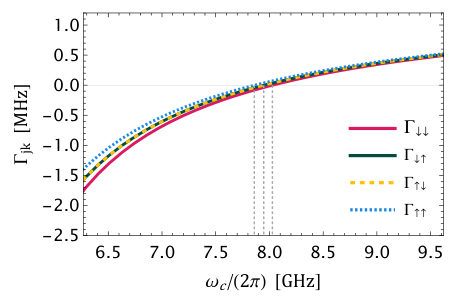
<figcaption class="paper-figure-caption"><b>Fig 1.</b> FIG. 2. Effective coupling constants of Eq. (28) as a function of the frequency of the tunable coupler. The gray dashed vertical lines indicate the values for which each coupling is null. The optimal value for minimal interaction is ωc/(2π) = 7.945 GHz, for which we get |Γ↓↓| and |Γ↑↑| in the order of 240 Hz, and |Γ↓↑| = |Γ↑↓| ≈4 Hz. For the time scale of single- qubit gates, these values correspond to the two qubits being effectively decoupled. For the iSWAP interaction, we select ωc/(2π) = 5.862 GHz, which is still comfortably within the dispersive regime while allowing for exchange interactions.</figcaption>
</figure>
<figure class="paper-figure-card">
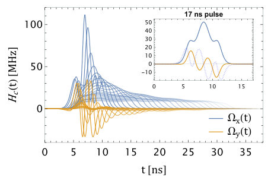
<figcaption class="paper-figure-caption"><b>Fig 2.</b> FIG. 3. Single-qubit pulses resulting in the Rx(π/2) rotation operation with gate time τ for 24 different values ranging from τ = 14 ns to τ = 38 ns. The curves are shown with decreasing opacity as the pulse duration increases. Inset we highlight the specific 17 ns pulse. In dashed blue we show −(1/α)dΩx(t)/dt, showing that the geodesic optimal pulse does not result in Ωy(t) proportional to the first derivative of Ωx(t), differently from DRAG pulses.</figcaption>
</figure>
<figure class="paper-figure-card">
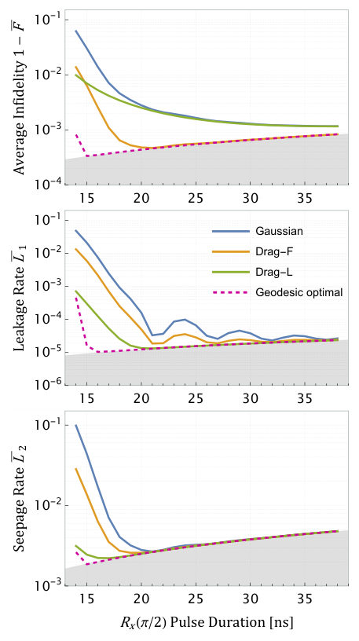
<figcaption class="paper-figure-caption"><b>Fig 3.</b> FIG. 4. Average infidelity, leakage, and seepage rates as functions of the duration of a single-qubit Rx(π/2) pulse using different pulse types. The shaded grey area corresponds to the limit set by the simulated thermal dissipation process. The optimized pulses through the geodesic search method show values for the three analyzed quantities minimized to the limit set by thermal dissipation even for short pulses.</figcaption>
</figure>
<figure class="paper-figure-card">
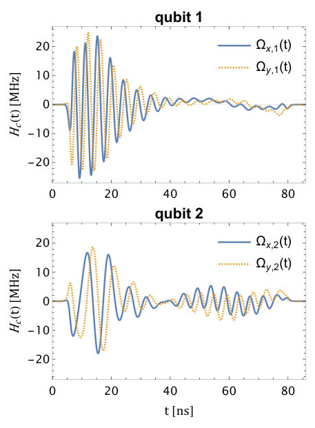
<figcaption class="paper-figure-caption"><b>Fig 4.</b> FIG. 5. Single-qubit pulses applied on each qubit for the synthesis of an iSWAP two-qubit gate. Since the optimization is done in the frame co-rotating with the two- qubits’ frequencies, the oscilations indicate the applied pulses must be off-resonant with the qubits.</figcaption>
</figure>
<figure class="paper-figure-card">
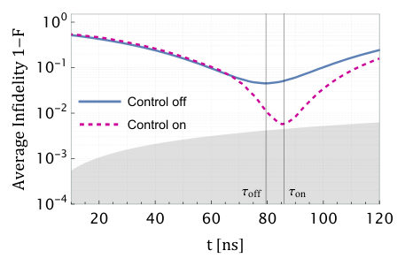
<figcaption class="paper-figure-caption"><b>Fig 5.</b> FIG. 6. Average infidelity for the iSWAP operation as function of evolution time. In complete absence of any signal from the control line, an iSWAP with F = 0.9548 is achieved at t = 79.5 ns. By turning on the control line with the geodesic optimized pulses, it is possible to synthesize the iSWAP with F = 0.9942 at t = 86 ns. The shaded grey area corresponds to the limit set by the simulated thermal dissipation process. The two vertical lines only indicate precisely the values in time τoff = 79.5 ns and τon = 86 ns for which the infidelity is minimum.</figcaption>
</figure>
</div>

<p><strong>Summary.</strong> This paper develops an advanced optimal control technique based on geodesic search to mitigate leakage errors in superconducting qubits. By smoothly shaping control pulses and deriving an effective Hamiltonian, the authors demonstrate significant improvements in gate fidelity over existing methods for both single- and two-qubit operations. This advances the practical viability of superconducting quantum hardware.</p>
<p><strong>Why it may be interesting.</strong> This work directly addresses a critical hardware limitation (leakage) in superconducting quantum processors by merging advanced concepts from optimal control theory (differential geometry) with solid-state quantum physics.</p>
<details>
<summary>Detailed structure</summary>
<p><strong>Main problem.</strong> The primary goal is to suppress leakage errors in superconducting qubits during quantum gate operations, which arise from population leaking to higher energy states.</p>
<p><strong>Main result.</strong> The proposed geodesic-based optimal control method significantly improves average gate fidelity and reduces leakage errors for single-qubit rotations compared to standard pulses, while achieving higher fidelity for two-qubit gates at the cost of slightly longer evolution times.</p>
<p><strong>Method.</strong> The authors adapt an optimal control technique using sub-Riemannian geodesic search on the unitary group, incorporating an envelope function to ensure smooth control pulse turn-on and turn-off.</p>
<p><strong>Model / system.</strong> The system models two superconducting qubits coupled via a tunable coupler, treated as anharmonic LC oscillators. The dynamics are governed by a full Hamiltonian, which is then simplified using Schrieffer-Wolff and Rotating-Wave Approximations to derive an effective Hamiltonian.</p>
<p><strong>Key observables.</strong> Average gate fidelity, leakage error rate, and the resulting unitary operation U(τ).</p>
<p><strong>Important parameters / regimes.</strong> Qubit frequencies, anharmonicities, coupling strengths, and the specific control pulse parameters (e.g., for $R_x(\pi/2)$ and iSWAP gates).</p>
<p><strong>Assumptions / limitations.</strong> The analysis assumes the coupler remains in its ground state (Schrieffer-Wolff) and applies the Rotating-Wave Approximation (RWA) to simplify the Hamiltonian.</p>
<p><strong>Paper structure.</strong> The paper first reviews the geodesic optimal control formalism and introduces leakage noise mitigation. It then details the physical model for two coupled qubits, deriving the effective Hamiltonian through sequential approximations (SW, RWA). Finally, it presents simulation results comparing the optimal pulses to standard pulses.</p>
</details>
<details>
<summary>Abstract</summary>
<p>Superconducting qubits are often based on the first two energy levels of a physical anharmonic LC oscillator. Since the anharmonicity of such systems is usually much lower than the involved energy gaps, population can easily leak to higher energy states. This is what characterizes leakage errors, and it can have multiple sources: from coherent error induced by the control platform to incoherent thermal dissipation. In this work, we adapt an optimal control method based on sub-Riemannian geodesic search in the unitary group for a system consisting of two superconducting qubits with leakage levels. We use the $R_x(π/2)$ rotation for single-qubit operation analysis, and the $i$SWAP operation for two-qubit analysis. For the former, we find considerable performance improvement in average gate fidelity as well as in the reduction of leakage errors when comparing the obtained optimal pulses with Gaussian and DRAG pulses, especially for short duration pulses. For the $i$SWAP gate, although leakage error remains roughly the same, we manage to obtain considerably higher fidelities with the cost of requiring a slightly longer time evolution.</p>
</details>
<p><sub><a href="#top">↑ back to top</a></sub></p>

<p><a id="paper-2610.09717"></a></p>
<h3 id="pareto-optimal-quantum-kernel-selection-for-unsupervised-anomaly-detection-on-real-malware-beaconing-data"><a href="http://arxiv.org/abs/2610.09717v1">Pareto-optimal quantum kernel selection for unsupervised anomaly detection on real malware beaconing data</a></h3>
<p><strong>Authors:</strong> Boaz Micah, Nadia Milazzo, Maissa Beji, Borja Aizpurua, Llorenç Espinosa-Portalés, Esteban Payares, Ghada Ben Slama, Luc Andrea, Michel Kurek, Thomas Cope, Olivier Salomon<br>
<strong>Type:</strong> both · <strong>Category:</strong> quantum information and computing · <strong>PDF:</strong> <a href="https://arxiv.org/pdf/2610.09717v1">https://arxiv.org/pdf/2610.09717v1</a><br>
<strong>Analysis basis:</strong> full PDF text, analyzed in chunks
<strong>Topic relevance:</strong> <code>QC/QI experiment</code> <strong>2/5</strong> · <code>quantum measurements</code> <strong>1/5</strong></p>
<div class="figure-strip-hint">↔ Scroll figures horizontally</div>
<div class="paper-figures-scroll">
<figure class="paper-figure-card">
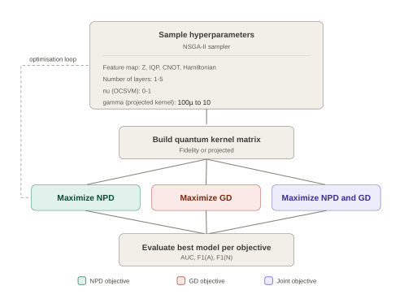
<figcaption class="paper-figure-caption"><b>Fig 1.</b> FIG. 1. The unsupervised optimisation pipeline: a hyper- parameter search over quantum kernels selected under three objectives (NPD, GD, and their joint Pareto knee) and eval- uated on the test set.</figcaption>
</figure>
<figure class="paper-figure-card">
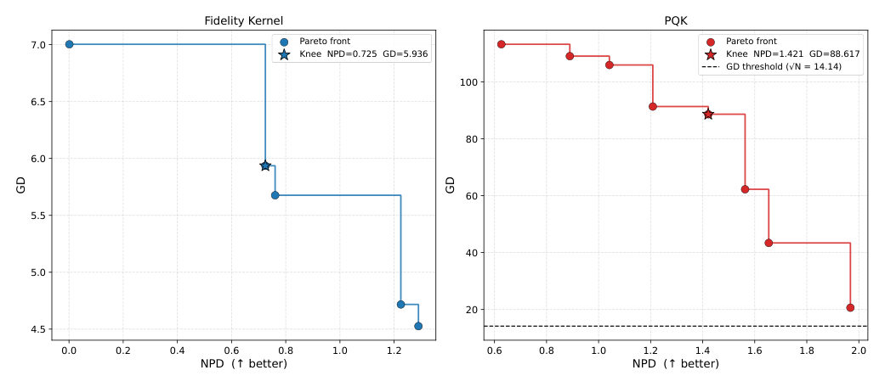
<figcaption class="paper-figure-caption"><b>Fig 2.</b> FIG. 2. Pareto fronts of the fidelity (blue) and projected (red) quantum kernels under joint maximisation of the NPD and GD, evaluated on the statevector simulator. Circles mark the non-dominated configurations of each front; stars mark the selected knee points. The fidelity kernel maintains a low GD across the front, whereas the projected kernel trades a high GD at low NPD for improved NPD, exposing the tension between the two objectives. Each front contains only the configurations that remained non-dominated during the optimisation, which is why the two kernels contribute different numbers of points.</figcaption>
</figure>
<figure class="paper-figure-card">
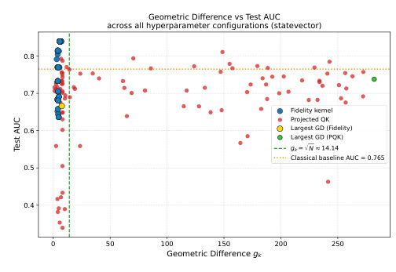
<figcaption class="paper-figure-caption"><b>Fig 3.</b> FIG. 3. Test AUC versus geometric difference gk for all hyperparameter configurations evaluated during the GD- maximisation run (statevector simulation). Blue: fidelity ker- nels; red: projected quantum kernels. The green dashed line marks gk = √</figcaption>
</figure>
<figure class="paper-figure-card">
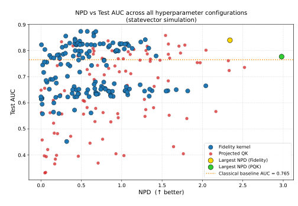
<figcaption class="paper-figure-caption"><b>Fig 4.</b> FIG. 4. Test AUC versus NPD for all hyperparameter config- urations evaluated during the NPD-maximisation run (stat- evector simulation). Blue: fidelity kernels; red: projected quantum kernels. The orange dotted line marks the tuned classical OCSVM baseline (AUC = 0.765). Fidelity kernels concentrate at higher AUC, with a substantial fraction above the baseline, while projected kernels spread widely between AUC ≈0.33 and 0.86 and mostly lie below it. Within each family the NPD–AUC relation is weak. The largest-NPD con- figuration of each family (yellow: fidelity; green: projected) lies above the baseline, at AUC = 0.840 and 0.777 respec- tively.</figcaption>
</figure>
<figure class="paper-figure-card">
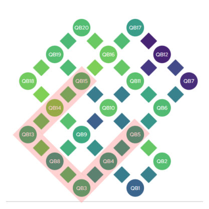
<figcaption class="paper-figure-caption"><b>Fig 5.</b> FIG. 5. Layout of the IQM Garnet QPU. The color map in- dicates single and two-qubit gate errors (darker=higher error, lighter=lower error). We highlight the optimal way to choose a qubit patch to implement a Hamiltonian evolution feature map with nearest-neighbour interactions. The specific patch needs to be adjusted depending on re-calibration of the QPU.</figcaption>
</figure>
</div>

<p><strong>Summary.</strong> This paper proposes a novel, unsupervised framework to select quantum kernels for anomaly detection by optimizing two metrics: predictive quality (NPD) and structural separation from classical methods (GD). Using real malware data on quantum hardware, the authors demonstrate a fundamental trade-off, showing that the best performance is achieved by a kernel that balances these two objectives rather than maximizing separation alone.</p>
<p><strong>Why it may be interesting.</strong> The work directly tests quantum machine learning kernels on a real-world cybersecurity problem, providing empirical benchmarks for the utility of quantum feature maps in data analysis, which is highly relevant to quantum information applications.</p>
<details>
<summary>Detailed structure</summary>
<p><strong>Main problem.</strong> The paper develops a systematic, unsupervised framework to select optimal quantum kernels for anomaly detection, balancing predictive performance against the degree of geometric separation from classical kernels.</p>
<p><strong>Main result.</strong> The Pareto-optimal selection process identifies a trade-off, showing that while projected kernels achieve large geometric differences, the best detection performance (AUC 0.840) was found using a fidelity kernel selected via the unsupervised Normalized Pseudo Discrepancy (NPD) criterion.</p>
<p><strong>Method.</strong> It employs a multi-objective optimization protocol to find the Pareto front by simultaneously maximizing the NPD (a label-free anomaly score) and maximizing the Geometric Difference (GD) between quantum and classical kernels.</p>
<p><strong>Model / system.</strong> The methods are applied to real malware beaconing data, utilizing one-class Support Vector Machines (OCSVM) with both fidelity and projected quantum kernels. Testing was conducted on both simulators and the IQM 20-qubit Garnet processor.</p>
<p><strong>Key observables.</strong> AUC (Area Under the Curve), Normalized Pseudo Discrepancy (NPD), and Geometric Difference ($g_{C	o Q}$).</p>
<p><strong>Important parameters / regimes.</strong> The trade-off between high expressivity (large GD) and high task performance (high NPD) is central; hardware noise limits the achievable advantage.</p>
<p><strong>Assumptions / limitations.</strong> The primary assumption is that the Pareto front guides the optimal model choice, and the NPD score serves as a reliable, label-free proxy for anomaly detection quality.</p>
<p><strong>Figures summary.</strong> Figures illustrate the unsupervised optimization pipeline searching the Pareto front, and hardware results compare performance metrics (AUC, F1) across different kernel types on the QPU.</p>
<p><strong>Paper structure.</strong> The paper introduces the multi-objective framework (NPD + GD), details the application to malware data using fidelity and projected kernels, presents results comparing simulation vs. hardware performance, and concludes by characterizing the performance-separability trade-off.</p>
</details>
<details>
<summary>Abstract</summary>
<p>Quantum kernel methods are leading candidates for a practical quantum advantage in machine learning, but assessing that potential requires two quantities usually reported separately: how well a kernel performs on the task, and how far its geometry departs from the classical kernels available for the same problem. We introduce a fully unsupervised, multi-objective protocol that optimises simultaneously the normalised pseudo discrepancy (NPD), a label-free proxy for anomaly detection quality, and the geometric difference (GD) to a tuned classical reference kernel, selecting models from the resulting Pareto front. We apply it to malware beaconing detection in real network traffic, using a one-class support vector machine with fidelity and projected quantum kernels over four data encodings, on simulators and on IQM's 20-qubit Garnet processor. NPD-guided selection alone finds a fidelity kernel that beats the tuned classical baseline, but with a geometric difference too small to certify the gain as quantum. Projected kernels reach far larger geometric differences; the Pareto-selected one only marginally exceeds the baseline (AUC $0.782$ versus $0.765$, $g_{C\to Q}\approx 89>\sqrt{N}$ relative to that reference kernel), still below the NPD-selected fidelity kernel ($0.840$).</p>
</details>
<p><sub><a href="#top">↑ back to top</a></sub></p>

<p><a id="paper-2610.09141"></a></p>
<h3 id="a-cognitive-aware-qml-crl-framework-for-detecting-affinity-and-romance-investment-fraud"><a href="http://arxiv.org/abs/2610.09141v1">A Cognitive-Aware QML-CRL Framework for Detecting Affinity and Romance-Investment Fraud</a></h3>
<p><strong>Authors:</strong> Bibhas Adhikari, Ramya Srinivasan<br>
<strong>Type:</strong> theory · <strong>Category:</strong> other · <strong>PDF:</strong> <a href="https://arxiv.org/pdf/2610.09141v1">https://arxiv.org/pdf/2610.09141v1</a><br>
<strong>Analysis basis:</strong> full PDF text, analyzed in chunks
<strong>Topic relevance:</strong> <code>quantum measurements</code> <strong>2/5</strong></p>
<div class="figure-strip-hint">↔ Scroll figures horizontally</div>
<div class="paper-figures-scroll">
<figure class="paper-figure-card">
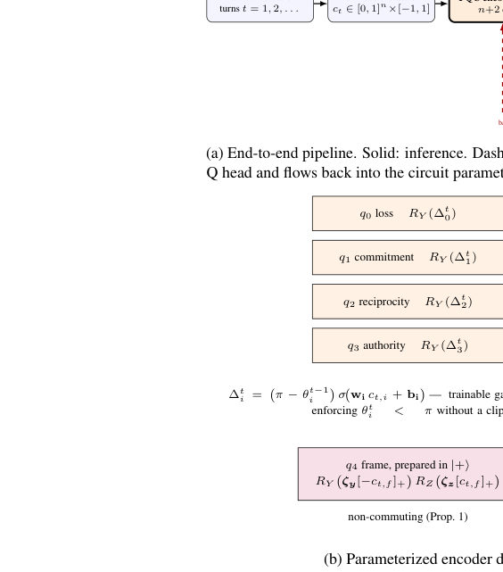
<figcaption class="paper-figure-caption"><b>Fig 1.</b> Figure 1: Complete architecture. (a) The end-to-end pipeline from raw conversation text to a flag/wait decision. (b) Detail of the parameterized quantum-cognitive encoder.</figcaption>
</figure>
<figure class="paper-figure-card">
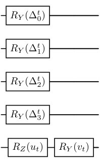
<figcaption class="paper-figure-caption"><b>Fig 2.</b> Figure 2: Gate-level structure of the parameterized quantum-cognitive encoder. All angles shown are functions of the trainable parameters Θ and of the current turn’s cues.</figcaption>
</figure>
<figure class="paper-figure-card">
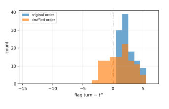
<figcaption class="paper-figure-caption"><b>Fig 3.</b> Figure 3: Training and order-sensitivity results. (a) Joint training enables the mis- specified encoder to adapt after warm-up, whereas the frozen encoder fails to flag. (b) Detection timing under turn-order shuffling with cue content held fixed.</figcaption>
</figure>
<figure class="paper-figure-card">
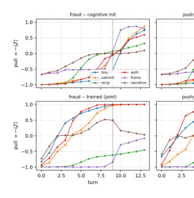
<figcaption class="paper-figure-caption"><b>Fig 4.</b> Figure 4: Risk-feature trajectories at the cognitive initialization (top) and after joint training (bottom), for a fraud conversation, a pushy-sales hard negative, and a benign conversation. Training sharpens the frame channel into the discriminator that separates fraud from pushy sales, while the loss and authority channels saturate on all three classes.</figcaption>
</figure>
<figure class="paper-figure-card">
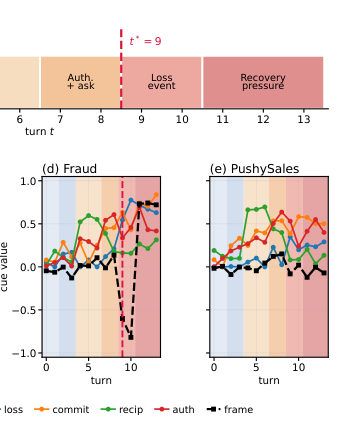
<figcaption class="paper-figure-caption"><b>Fig 5.</b> Figure 5: The synthetic conversation generator. (a) Each fraudulent conversation is divided into six stages by the boundaries ⌊linspace(0, T, 7)⌋, shown here for T = 14; the labelled critical turn t∗is the first turn of the loss-event stage (turn 9), and detection lateness is measured relative to it. (b) Each stage s carries a fixed base level b(s) i ∈[0, 1] for the four bias channels. (c) The frame channel b(s) f ∈[−1, 1] is zero for the first four stages and non-zero only in the last two, with opposite signs, so every fraudulent conversation contains exactly one RZ ↔RY transition. By the sign convention of Eq. (6), ct,f &gt; 0 is loss framing and drives RZ while ct,f &lt; 0 is recovery framing...</figcaption>
</figure>
</div>

<p><strong>Summary.</strong> This paper introduces a Cognitive-Aware Quantum Machine Learning framework that combines a structured Parameterized Quantum Circuit (PQC) with Reinforcement Learning (RL) to detect financial fraud. The PQC encodes measurable cognitive biases and conversational structure into quantum feature vectors. The RL agent then uses these quantum features to learn the optimal timing for flagging suspicious interactions, treating the detection as an optimal stopping problem.</p>
<p><strong>Why it may be interesting.</strong> While the application is in NLP/Fraud Detection, the core mechanism involves using quantum circuits to encode structured, non-linear information (cognitive biases, temporal order) into a feature space for a classical control problem (RL), which is a novel application of quantum feature mapping.</p>
<details>
<summary>Detailed structure</summary>
<p><strong>Main problem.</strong> The paper addresses the detection of affinity and romance-investment fraud by modeling the cognitive biases present in manipulative conversations.</p>
<p><strong>Main result.</strong> The proposed hybrid quantum-classical framework successfully trains an agent to optimally decide when to flag a conversation based on quantum-derived risk features.</p>
<p><strong>Method.</strong> It employs a joint training scheme where a Parameterized Quantum Circuit (PQC) encodes cognitive biases, and a classical Reinforcement Learning (RL) agent optimizes the stopping decision.</p>
<p><strong>Model / system.</strong> The model uses an $(n+2)$-qubit quantum register containing qubits for specific cognitive biases, a frame qubit for temporal order, and a narrative qubit for co-occurrence. The quantum circuit parameters are trained via semi-gradient Temporal-Difference (TD) learning.</p>
<p><strong>Key observables.</strong> The primary observables are the continuous, per-turn risk signals derived from the quantum register readout, forming the state vector $\mathbf{s}_t$ used by the RL agent.</p>
<p><strong>Important parameters / regimes.</strong> Key parameters include the bias weights ($\Theta$), the RL action-value weights ($\mathbf{w}_a$), and regularization parameters like $\lambda$ controlling the trade-off between interpretability and adaptability.</p>
<p><strong>Assumptions / limitations.</strong> The framework assumes that the fraud detection problem can be modeled as an optimal stopping problem solvable by combining quantum feature mapping with RL. It also assumes the synthetic data generation process has no autoregressive structure.</p>
<p><strong>Figures summary.</strong> Figure 1 illustrates the end-to-end pipeline from raw text to the flag/wait decision, alongside the detailed quantum encoder. Figure 5 details the synthetic data generation process across six distinct stages of a fraudulent conversation.</p>
<p><strong>Paper structure.</strong> The paper details the architecture (PQC encoder + RL agent), the mathematical formalism for gradient calculation (parameter shift rule, semi-gradient TD learning), the training stabilization techniques (warm-up, anchoring), and the evaluation using synthetic, stage-structured data.</p>
</details>
<details>
<summary>Abstract</summary>
<p>We present a hybrid quantum-classical framework that detects affinity and romance-investment fraud by modelling the cognitive biases in a manipulative conversation. In our proposed framework, cognitive biases central to this fraud class are carried by dedicated qubits in a structured parameterized quantum circuit, together with a frame qubit makes the encoding sensitive to the temporal order of manipulative reframing, and a narrative qubit that aggregates co-occurrence through a trainable entanglement layer. The circuit parameters are trained jointly with a classical reinforcement-learning agent that decides, turn by turn, whether to flag the conversation, modeled as an optimal stopping problem. We evaluate the model's performance on synthetic conversations that include hard negatives, legitimate but urgent, and legitimate but pushy sales conversations.</p>
</details>
<p><sub><a href="#top">↑ back to top</a></sub></p>

<p><a id="paper-2610.10248"></a></p>
<h3 id="an-explicit-counterexample-to-tsirelsons-problem-via-a-linear-system-game"><a href="http://arxiv.org/abs/2610.10248v1">An Explicit Counterexample to Tsirelson's Problem via a Linear System Game</a></h3>
<p><strong>Authors:</strong> Minbo Gao, Tianshi Yu, Lihong Zhi<br>
<strong>Type:</strong> theory · <strong>Category:</strong> quantum information and computing · <strong>PDF:</strong> <a href="https://arxiv.org/pdf/2610.10248v1">https://arxiv.org/pdf/2610.10248v1</a><br>
<strong>Analysis basis:</strong> full PDF text, analyzed in chunks
<strong>Topic relevance:</strong> <code>quantum measurements</code> <strong>2/5</strong></p>
<div class="figure-strip-hint">↔ Scroll figures horizontally</div>
<div class="paper-figures-scroll">
<figure class="paper-figure-card">
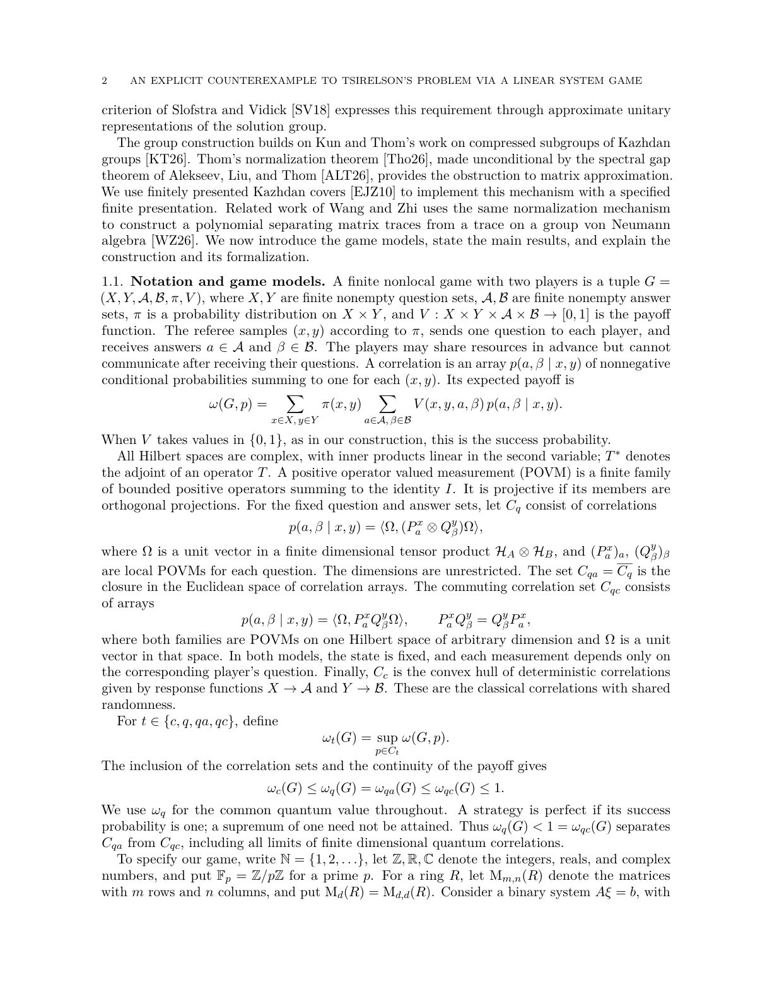
<figcaption class="paper-figure-caption"><b>Fig 1.</b> Low-resolution page preview, page 2</figcaption>
</figure>
<figure class="paper-figure-card">
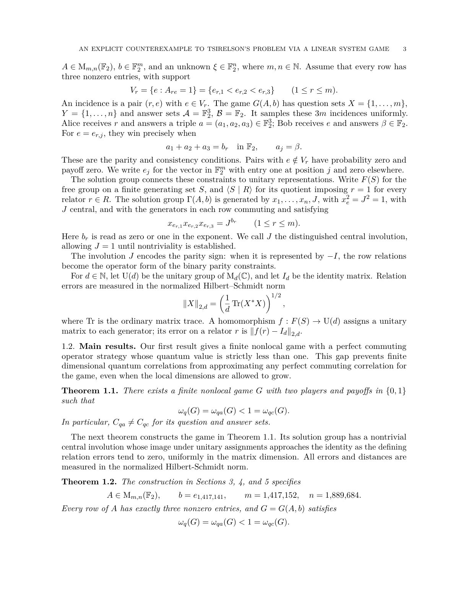
<figcaption class="paper-figure-caption"><b>Fig 2.</b> Low-resolution page preview, page 3</figcaption>
</figure>
<figure class="paper-figure-card">
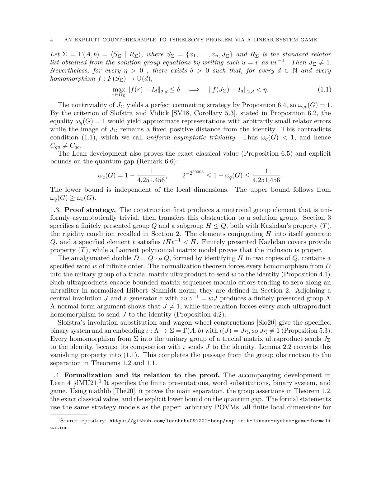
<figcaption class="paper-figure-caption"><b>Fig 3.</b> Low-resolution page preview, page 4</figcaption>
</figure>
<figure class="paper-figure-card">
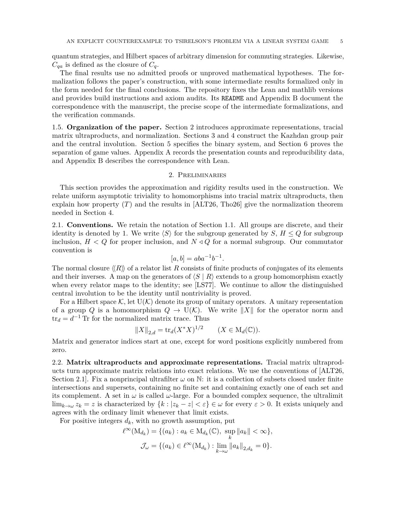
<figcaption class="paper-figure-caption"><b>Fig 4.</b> Low-resolution page preview, page 5</figcaption>
</figure>
<figure class="paper-figure-card">
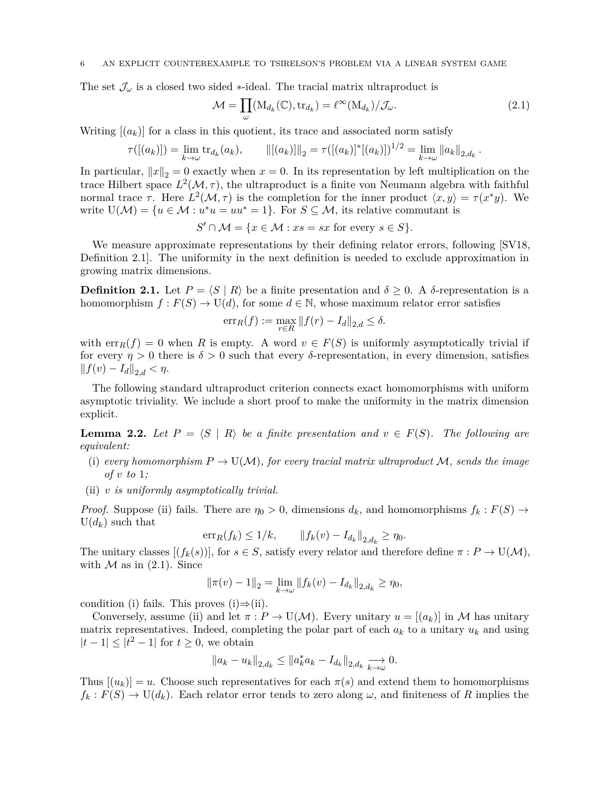
<figcaption class="paper-figure-caption"><b>Fig 5.</b> Low-resolution page preview, page 6</figcaption>
</figure>
</div>

<p><strong>Summary.</strong> This paper constructs an explicit, large-scale linear system game that serves as a counterexample to Tsirelson's problem in its approximation form. By showing a measurable gap between the achievable quantum correlations ($ ext{Cqa}$) and the correlations from commuting measurements ($ ext{Cqc}$), it proves that these two sets of correlations are distinct. The methodology is highly technical, relying on advanced group theory and formal verification in Lean 4.</p>
<p><strong>Why it may be interesting.</strong> This work provides a deep, mathematically rigorous counterexample to a fundamental question in quantum information theory, using tools from geometric group theory, which is highly relevant for understanding the limits of quantum correlation models.</p>
<details>
<summary>Detailed structure</summary>
<p><strong>Main problem.</strong> The paper addresses Tsirelson's problem in its approximation form: determining if quantum correlations achievable by commuting measurements ($    ext{Cqc}$) can always be approximated by correlations from finite-dimensional quantum measurements ($ ext{Cqa}$).</p>
<p><strong>Main result.</strong> The authors construct an explicit binary linear system game that serves as a concrete counterexample, proving that $   ext{Cqa} 
eq  ext{Cqc}$ by showing $\omega_{	ext{qa}}(G) < 1 = \omega_{	ext{qc}}(G)$.</p>
<p><strong>Method.</strong> The proof combines advanced group theory (Kazhdan groups, ultraproducts) to construct a group obstruction, which is then mapped to a concrete linear system game structure to establish the gap in correlation values.</p>
<p><strong>Model / system.</strong> The model is a binary linear system game $G(A, b)$ defined over $\mathbb{F}_2$, whose correlation values ($\omega_{	ext{qa}}, \omega_{	ext{qc}}$) are analyzed. The underlying mathematical machinery involves finitely presented groups and their representations.</p>
<p><strong>Key observables.</strong> The primary observables are the expected payoff values $\omega_{	ext{qa}}(G)$ and $\omega_{	ext{qc}}(G)$, with explicit bounds calculated for the gap.</p>
<p><strong>Important parameters / regimes.</strong> The game parameters are specified by a large matrix size ($m=1,417,152$, $n=1,889,684$), and the gap is quantified by specific rational numbers derived from the construction.</p>
<p><strong>Assumptions / limitations.</strong> The construction relies heavily on advanced results from group theory, including the properties of Kazhdan's property (T) and the use of tracial matrix ultraproducts for formalization in Lean 4.</p>
<p><strong>Figures summary.</strong> The notes reference tables detailing the mapping between mathematical statements and their formal declarations in Lean, and tables summarizing the game-value arguments and matrix data.</p>
<p><strong>Paper structure.</strong> The paper develops by first establishing the theoretical framework using group theory and ultraproducts to generate an obstruction, which is then translated into the concrete structure of a linear system game, culminating in the explicit calculation of the gap between the quantum and commuting correlation values.</p>
</details>
<details>
<summary>Abstract</summary>
<p>We construct an explicit binary linear system game that separates \(C_{qa}\), the closure of the set of finite dimensional quantum correlations, from \(C_{qc}\), the set of commuting operator correlations. The game admits a perfect commuting operator strategy, while every correlation in \(C_{qa}\) has a success probability strictly less than 1. This provides a concrete counterexample to Tsirelson's problem in its approximation form. The defining system has \(1{,}417{,}152\) equations in \(1{,}889{,}684\) variables, with exactly three nonzero coefficients per equation and a single nonzero entry on the right hand side. We also compute the classical value exactly. The complete system is specified in Lean~4, and the separation and exact classical value are formalized using Mathlib.</p>
</details>
<p><sub><a href="#top">↑ back to top</a></sub></p>

<p><a id="paper-2610.10176"></a></p>
<h3 id="collusion-secure-semi-quantum-secret-sharing-scheme-using-a-quantum-third-party"><a href="http://arxiv.org/abs/2610.10176v1">Collusion-Secure Semi-Quantum Secret Sharing Scheme using a Quantum Third Party</a></h3>
<p><strong>Authors:</strong> Santanu Majhi, Nirupam Basak<br>
<strong>Type:</strong> theory · <strong>Category:</strong> quantum information and computing · <strong>PDF:</strong> <a href="https://arxiv.org/pdf/2610.10176v1">https://arxiv.org/pdf/2610.10176v1</a><br>
<strong>Analysis basis:</strong> full PDF text, analyzed in chunks
<strong>Topic relevance:</strong> <code>quantum measurements</code> <strong>2/5</strong></p>
<div class="figure-strip-hint">↔ Scroll figures horizontally</div>
<div class="paper-figures-scroll">
<figure class="paper-figure-card">
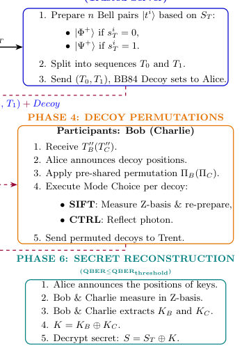
<figcaption class="paper-figure-caption"><b>Fig 1.</b> Fig. 1. Overall architecture of the proposed SQSS protocol. The dotted arrows denote quantum communication, while the solid black arrows denote classical communication among the participating entities.</figcaption>
</figure>
</div>

<p><strong>Summary.</strong> This paper introduces a robust Semi-Quantum Secret Sharing (SQSS) protocol designed to eliminate critical security vulnerabilities present in prior schemes. By incorporating decoy states and restricting operational authority, the authors achieve information-theoretic security against sophisticated collusion attacks. This advances the practical application of quantum key distribution concepts to secure multi-party computation.</p>
<p><strong>Why it may be interesting.</strong> This work directly addresses the security foundations of quantum information protocols, which is central to quantum computing and quantum cryptography research.</p>
<details>
<summary>Detailed structure</summary>
<p><strong>Main problem.</strong> The security of Semi-Quantum Secret Sharing (SQSS) protocols is vulnerable to undetected collusion attacks by dishonest participants, even when assisted by a quantum third party.</p>
<p><strong>Main result.</strong> The authors propose a novel SQSS protocol that achieves information-theoretic security against collusion attacks and is resilient against various external and internal eavesdropping strategies.</p>
<p><strong>Method.</strong> The work involves designing a multi-phase quantum protocol incorporating decoy states, restricting operational authority, and using error rate checks (QBER) to detect malicious behavior.</p>
<p><strong>Model / system.</strong> The model is a quantum communication protocol involving classical participants with limited quantum capabilities (Z-basis measurements) assisted by a quantum third party, utilizing entangled pairs and decoy states.</p>
<p><strong>Key observables.</strong> Quantum Bit Error Rate (QBER), detection probability of attacks (e.g., DCNA), and the final reconstructed secret key.</p>
<p><strong>Important parameters / regimes.</strong> Qubit efficiency ($\eta$), the number of decoy particles ($m_X$), and the threshold for QBER.</p>
<p><strong>Assumptions / limitations.</strong> The security proofs rely on the assumption that the protocol structure restricts the authority of the third party and that operational modes are announced only after all measurements are complete.</p>
<p><strong>Figures summary.</strong> The notes mention a comparison table (Table 1) summarizing the proposed protocol's advantages over existing schemes regarding security and efficiency, and a trace table (Table 2) detailing an attack simulation.</p>
<p><strong>Paper structure.</strong> The paper progresses by first identifying vulnerabilities in existing SQSS protocols, then proposing an enhanced, multi-phase protocol, followed by rigorous security proofs against specific attacks (DCNA, EM, DSSA), and finally demonstrating the recovery of the secret under a universal Z-sweep attack.</p>
</details>
<details>
<summary>Abstract</summary>
<p>The security of a secret sharing protocol is compromised if one or more dishonest participants can reconstruct the secret by deviating from the prescribed protocol, particularly when such malicious behavior remains undetected. Semi-Quantum Secret Sharing (SQSS) is a variant of secret sharing in which the participants possess only classical capabilities, such as preparing and measuring qubits in the computational ($Z$) basis, while a quantum-capable third party assists the dealer in generating and distributing quantum shares of a classical secret. The limited quantum capabilities of the participants in SQSS protocols may introduce vulnerabilities to collusion attacks, enabling an assisting quantum third party, in collaboration with a dishonest classical participant, to jointly recover the secret even without detection. In this work, we propose a novel SQSS protocol that eliminates this vulnerability and achieves information-theoretic security against collusion attacks. We further prove that the proposed protocol is secure against a broad class of external and internal attacks. Finally, a comparative analysis demonstrates that our construction advances existing SQSS protocols by simultaneously optimizing qubit efficiency, involves a classical dealer, and resilience against DCNA attacks using basic Bell states.</p>
</details>
<p><sub><a href="#top">↑ back to top</a></sub></p>

<p><a id="paper-2610.09353"></a></p>
<h3 id="non-orthogonal-amplitude-amplification-for-hybrid-cv-dv-quantum-processors"><a href="http://arxiv.org/abs/2610.09353v1">Non-Orthogonal Amplitude Amplification for Hybrid CV-DV Quantum Processors</a></h3>
<p><strong>Authors:</strong> Jiyuan Liu, Joel Bierman, Yuan Liu<br>
<strong>Type:</strong> theory · <strong>Category:</strong> quantum information and computing · <strong>PDF:</strong> <a href="https://arxiv.org/pdf/2610.09353v1">https://arxiv.org/pdf/2610.09353v1</a><br>
<strong>Analysis basis:</strong> full PDF text, analyzed in chunks
<strong>Topic relevance:</strong> <code>quantum measurements</code> <strong>2/5</strong></p>
<div class="figure-strip-hint">↔ Scroll figures horizontally</div>
<div class="paper-figures-scroll">
<figure class="paper-figure-card">
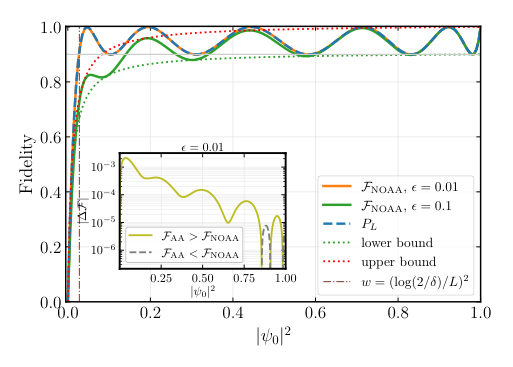
<figcaption class="paper-figure-caption"><b>Fig 1.</b> Figure 1: A comparison between AA and NOAA for two-state model. Both NOAA sequence and AA sequence have degree l = 5 and the error parameter δ2 = 0.1. The AA fidelity PL is given by Eq. (32). The NOAA fidelity FNOAA is given by Eq. (40). The upper bound of NOAA (red dashed line) η is defined in Eq. (40) and the corresponding lower bound (green dashed line) is η(1 −δ2). The horizontal gray solid line represents 1 −δ2, the lower bound of AA. Inset shows the difference |∆F| = |FAA −FNOAA|, where ϵ for NOAA here is 0.01.</figcaption>
</figure>
<figure class="paper-figure-card">
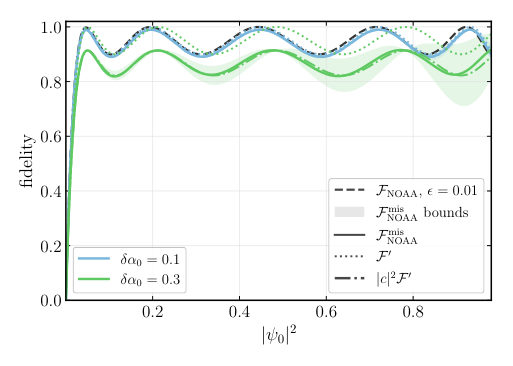
<figcaption class="paper-figure-caption"><b>Fig 2.</b> Figure 2: A comparison between matched NOAA and mismatched NOAA for two-state model. Both NOAA sequences have degree l = 5 and the error parameter δ2 = 0.1. The ϵ of matched NOAA is 0.01. The shaded region represents the bounds defined in Eq. (47). The blue lines are mismatched NOAA with |δα0| = 0.1 and the green lines are mismatched NOAA with |δα0| = 0.3.</figcaption>
</figure>
<figure class="paper-figure-card">
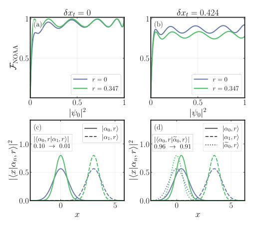
<figcaption class="paper-figure-caption"><b>Fig 3.</b> Figure 3: Comparison between unsqueezed-state model and squeezed states model. We consider a two-state NOAA model with sequence degree l = 5, fixed-point error parameter δ2 = 0.1, we numerically calculate the fidelity with QuTiP [22]. The target oscillator state is centered at x0 = 0, while the non-target state is chosen to center at x1 ≈3.03 such that ϵ = |⟨α0, r|α1, r⟩| = 0.1 for r = 0 with α0 = x0/ √</figcaption>
</figure>
<figure class="paper-figure-card">
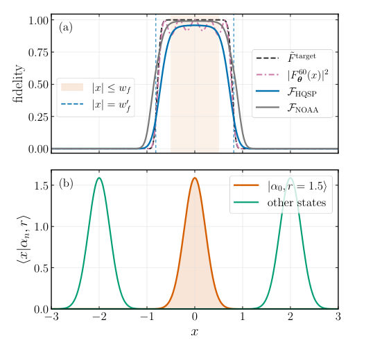
<figcaption class="paper-figure-caption"><b>Fig 4.</b> Figure 4: HQSP filter and NOAA. (a) The numerical result of the target function ˜F target, the encoded polynomial F 60 θ , the fidelity of HQSP FHQSP and NOAA FNOAA, with QuTiP [22]. The target function ˜F target(x) is defined in Eq. (63). F 60 θ (x) is the degree-60 polynomial encoded in HQSP, defined in Eq. (66). We use an input state |χ⟩= |0⟩q ⊗|α, r⟩o ⊗|0⟩Q with α = x/ √</figcaption>
</figure>
<figure class="paper-figure-card">
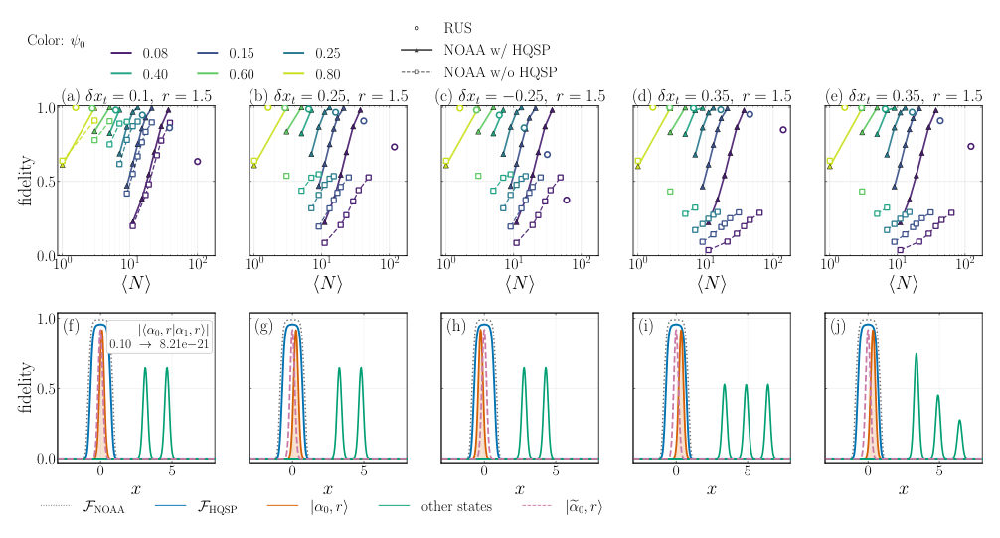
<figcaption class="paper-figure-caption"><b>Fig 5.</b> Figure 5: Comparison of RUS and NOAA performance for different target-energy mismatches and initial-state distributions. Panels (a)–(e) show the target-state fidelity as a function of the average number of state-preparation queries ⟨N⟩. Colors denote different initial target amplitudes ψ0. Open circles represent RUS, filled triangles represent NOAA preceded by the HQSP filter, and open squares represent NOAA without HQSP. The parameters of HQSP are d = 60, ϵsm = 0.33, T = 10 and target width is wf = 0.5. We use the phase angles of NOAA given in Eq. (31) with δ2 = 0.01. We choose the squeezing parameter r = 1.5 for initial state |Ψr 0⟩. Panels (f)–(j) show the corresponding oscillator...</figcaption>
</figure>
</div>

<p><strong>Summary.</strong> This paper introduces Non-Orthogonal Amplitude Amplification (NOAA) for quantum processors combining continuous and discrete variables. It addresses fidelity limitations arising from non-orthogonal state overlaps and energy measurement errors. By proposing a High-Quality Spectral Projector (HQSP) filter, the authors show that their method outperforms standard techniques like RUS, particularly for preparing states with small initial amplitudes.</p>
<p><strong>Why it may be interesting.</strong> This work is highly relevant as it tackles practical limitations (non-orthogonality, imperfect knowledge) in implementing quantum search algorithms on complex, hybrid quantum hardware architectures.</p>
<details>
<summary>Detailed structure</summary>
<p><strong>Main problem.</strong> The paper addresses developing a Non-Orthogonal Amplitude Amplification (NOAA) method for hybrid Continuous Variable-Discrete Variable (CV-DV) quantum processors when the available projector is not perfectly selective for the target state.</p>
<p><strong>Main result.</strong> The proposed protocol, utilizing a squeezed CV ancilla and a HQSP filter, achieves higher fidelity and efficiency than the Repeat-Until-Success (RUS) method for small initial target amplitudes, even in the presence of non-orthogonality.</p>
<p><strong>Method.</strong> The authors generalize Amplitude Amplification (AA) to the NOAA framework and mitigate performance degradation using a High-Quality Spectral Projector (HQSP) filter to suppress errors from imperfect state discrimination and energy mismatch.</p>
<p><strong>Model / system.</strong> The system modeled is a hybrid CV-DV quantum processor, combining continuous variables (oscillators) with discrete variables (qubits). The protocol relies on spectral-transformation oracles acting on this coupled system.</p>
<p><strong>Key observables.</strong> Target-state fidelity ($   ext{F}_{    ext{NOAA}}$), success probability ($P_s$), and the degree of fidelity degradation due to state non-orthogonality or energy mismatch.</p>
<p><strong>Important parameters / regimes.</strong> Initial target-state amplitude ($\psi_0$), squeezing parameter ($r$), and the degree of energy mismatch ($\delta\alpha_0$).</p>
<p><strong>Assumptions / limitations.</strong> The primary limitation is that the CV-assisted reflection is non-selective due to non-orthogonal CV states associated with different DV eigenstates, and the target eigenenergy may only be known approximately.</p>
<p><strong>Figures summary.</strong> The notes mention analyzing oscillator wavepackets and filter responses, showing how the HQSP filter keeps the target wavepacket within the passband, which is crucial for maintaining high fidelity.</p>
<p><strong>Paper structure.</strong> The paper first establishes the problem of non-orthogonality in CV-DV systems, derives the fidelity bounds, and then proposes the HQSP-assisted NOAA protocol. It compares this protocol's performance against the standard Repeat-Until-Success (RUS) method across different regimes of initial amplitude.</p>
</details>
<details>
<summary>Abstract</summary>
<p>We introduce a non-orthogonal amplitude amplification (NOAA) method for hybrid continuous-variable- discrete-variable (CV-DV) quantum processors, where the available CV-assisted projector is not perfectly se- lective for the target state. We establish a bound on the achievable target-state fidelity, which is determined by the initial target-state amplitude and the selectivity of the accessible reflection operator. This bound limits the performance of NOAA in hybrid CV-DV systems. To mitigate this limitation, we propose using a squeezed CV ancilla to reduce the overlap between relevant CV states and a hybrid quantum signal processing (HQSP) filter to suppress errors arising from imperfect knowledge of the target eigenenergy. Numerical simulations show that, for small initial target-state amplitudes, our protocol achieves higher fidelity and efficiency than the repeat-until-success (RUS) method despite the presence of non-orthogonality. For large initial amplitudes, RUS is already efficient, and amplitude amplification provides little additional advantage.</p>
</details>
<p><sub><a href="#top">↑ back to top</a></sub></p>

<p><a id="paper-2610.10471"></a></p>
<h3 id="optimized-discrete-wigner-representations-and-non-stabilizerness-in-qubit-systems"><a href="http://arxiv.org/abs/2610.10471v1">Optimized discrete Wigner representations and non-stabilizerness in qubit systems</a></h3>
<p><strong>Authors:</strong> A. B. Klimov, C. Muñoz, I. Sainz<br>
<strong>Type:</strong> theory · <strong>Category:</strong> quantum information and computing · <strong>PDF:</strong> <a href="https://arxiv.org/pdf/2610.10471v1">https://arxiv.org/pdf/2610.10471v1</a><br>
<strong>Analysis basis:</strong> full PDF text, analyzed in chunks
<strong>Topic relevance:</strong> <code>quantum measurements</code> <strong>2/5</strong></p>
<div class="figure-strip-hint">↔ Scroll figures horizontally</div>
<div class="paper-figures-scroll">
<figure class="paper-figure-card">
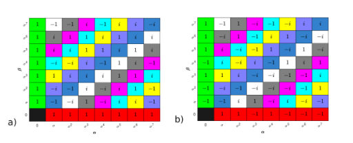
<figcaption class="paper-figure-caption"><b>Fig 1.</b> FIG. 1. a) Phase space arrangement corresponding to the partition (26) with all positive phases (35); b) the same with especially chosen signs of phases (15), n = 3 [60].</figcaption>
</figure>
<figure class="paper-figure-card">
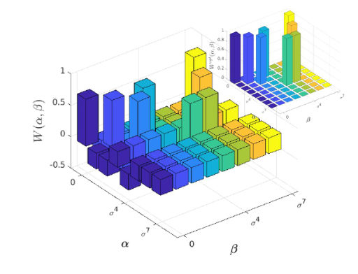
<figcaption class="paper-figure-caption"><b>Fig 2.</b> FIG. 2. a) The Wigner function for the cluster state (54) in the arrangement given in Fig. 1a of the partition (26). b) the same in the arrangement given in Fig. 1b, n = 3 [60].</figcaption>
</figure>
<figure class="paper-figure-card">
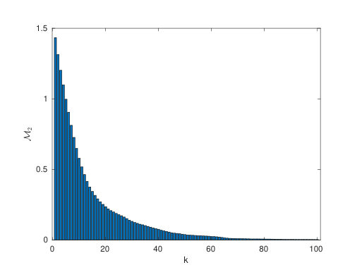
<figcaption class="paper-figure-caption"><b>Fig 3.</b> FIG. 3. The stabilizer entropy (68) along numerical descent toward flat states for five qubits. The bars are averages over 100 successful Haar-initialized trajectories that reached the minimum within numerical precision in fewer than 120 ac- cepted updates. The coordinate k counts the number of steps used in the gradient optimization algorithm.</figcaption>
</figure>
<figure class="paper-figure-card">
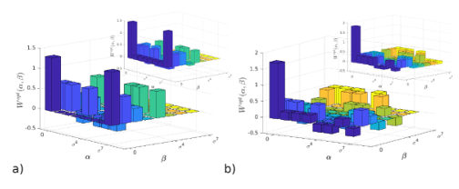
<figcaption class="paper-figure-caption"><b>Fig 4.</b> FIG. 4. The optimized Wigner function in the partition (26) for a) W-state, |W ⟩∼|100⟩+ |010⟩+ |001⟩; b) domain wall state |DW ⟩∼|000⟩+ |100⟩+ |110⟩+ |111⟩; Inset plots: the optimized Wigner functions for the same states in the parti- tion (C1)-(C4), n = 3 [60].</figcaption>
</figure>
<figure class="paper-figure-card">
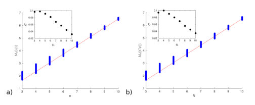
<figcaption class="paper-figure-caption"><b>Fig 5.</b> FIG. 5. a) The witness (69) in the partition (26) as a function of the number of qubits for 1000 Haar random states. b) The witness (69) in the partition (26) as a function of the number of qubits for a Haar state after 1000 random Clifford transformations. Red line: M = n ln 2 + γ −1 [60].</figcaption>
</figure>
</div>

<p><strong>Summary.</strong> This paper develops a novel, optimized phase-space characterization for qubit stabilizer states by adapting the discrete Wigner function to the specific state. It constructs a non-stabilizer witness based on this optimization, which allows for the rigorous, operational detection of non-stabilizer quantum states. The results restore a meaningful geometric understanding of stabilizer structure in the context of quantum information theory.</p>
<p><strong>Why it may be interesting.</strong> This work provides a powerful, operational diagnostic tool (the witness) to distinguish stabilizer states from general quantum states using phase-space geometry, which is fundamental to understanding quantum resource theories.</p>
<details>
<summary>Detailed structure</summary>
<p><strong>Main problem.</strong> The paper addresses the lack of a fundamental, state-independent phase-space description for qubit stabilizer states when using the discrete Wigner function.</p>
<p><strong>Main result.</strong> By introducing a state-adapted optimization procedure, the authors prove that stabilizer states admit an exact delta-function Wigner representation, leading to a non-stabilizer witness that certifies non-stabilizerness.</p>
<p><strong>Method.</strong> The methodology involves optimizing the discrete Wigner map based on measurement statistics across mutually unbiased bases (MUBs) and analyzing the resulting witness quantity under random Clifford transformations.</p>
<p><strong>Model / system.</strong> The system under study is the $n$-qubit quantum system, analyzed using the discrete phase space defined by Pauli operators and displacement operators. The structure relies heavily on the properties of stabilizer states and complete MUB partitions.</p>
<p><strong>Key observables.</strong> The non-stabilizer witness $W_{	ext{opt}}(0)$ (optimized Wigner function at the origin), and the covariance $ ext{Cov}<em>C(X</em>\lambda(C), X_\mu(C))$ of observables.</p>
<p><strong>Important parameters / regimes.</strong> The number of qubits ($n$), the dimension ($d=2^n$), and the effective number of statistically distinct phase patterns ($N_{	ext{eff}}$).</p>
<p><strong>Assumptions / limitations.</strong> The analysis assumes the existence of a complete stabilizer MUB partition and relies on asymptotic limits (large-qubit limit) for the stability of the witness.</p>
<p><strong>Figures summary.</strong> Figure 1 illustrates the discrete phase space partition ($\pi$) for qubits, showing how different choices of cocycle phases lead to different arrangements.</p>
<p><strong>Paper structure.</strong> The paper progresses by first identifying the limitation of fixed Wigner maps, then introducing the state-adapted optimization, proving the delta-function representation for stabilizers, and finally developing advanced tools (covariance estimation, large deviation theory) to diagnose non-stabilizerness robustly.</p>
</details>
<details>
<summary>Abstract</summary>
<p>The apparent absence of a stabilizer-speci?c phase-space description for qubit systems is not fundamental, but arises from ?xing a state-independent discrete Wigner map. Allowing the phase-space representation to adapt to the state through a simple optimization procedure, we prove that every qubit stabilizer state admits an exact delta-function discrete Wigner representation for any ?xed phase-space partition. This optimization can be implemented directly at the level of measurement statistics by selecting maximal probabilities across mutually unbiased bases forming the partition. This construction naturally leads to a non-stabilizer witness de?ned by the optimized value of the Wigner function at the origin. Stabilizer states saturate the universal lower bound of this witness for pure states, whereas a value strictly larger than the bound certi?es non-stabilizerness. Although the witness is not a ?nite-size resource monotone, it becomes sharply concentrated and e?ectively invariant under random Cli?ord transformations in the large-qubit limit, suggesting an asymptotically linear growth law for broad families of non-stabilizer states. Our results restore a meaningful geometric phase-space characterization of qubit stabilizer structure and provide an operational diagnostic of non-stabilizerness.</p>
</details>
<p><sub><a href="#top">↑ back to top</a></sub></p>

<p><a id="paper-2610.09345"></a></p>
<h3 id="polarized-neutron-diffraction-with-ex-situ-math450mathhe-neutron-spin-filter-and-two-dimensional-detector-for-noncollinear-incommensurate-magnetic-order"><a href="http://arxiv.org/abs/2610.09345v1">Polarized neutron diffraction with ex-situ $^3$He neutron spin filter and two-dimensional detector for noncollinear incommensurate magnetic order</a></h3>
<p><strong>Authors:</strong> Shingo Takahashi, Yuta Osawa, Ryuju Kobayashi, Takashi Ino, Hiraku Saito, Takuro Kawasaki, Takayuki Oku, Tatsuya Nakamura, Yoichi Ikeda, Masaki Fujita, Daisuke Koto, Yusuke Tokunaga, Taka-hisa Arima, Taro Nakajima<br>
<strong>Type:</strong> experiment · <strong>Category:</strong> other · <strong>PDF:</strong> <a href="https://arxiv.org/pdf/2610.09345v1">https://arxiv.org/pdf/2610.09345v1</a><br>
<strong>Analysis basis:</strong> full PDF text, analyzed in chunks
<strong>Topic relevance:</strong> <code>quantum measurements</code> <strong>2/5</strong></p>
<div class="figure-strip-hint">↔ Scroll figures horizontally</div>
<div class="paper-figures-scroll">
<figure class="paper-figure-card">
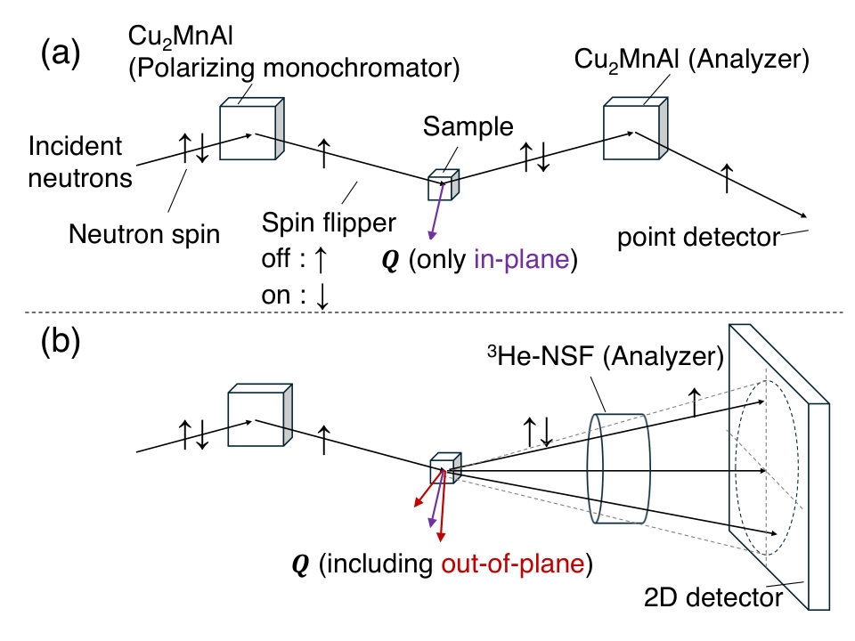
<figcaption class="paper-figure-caption"><b>Fig 1.</b> Figure 1: Schematic illustrations comparing neutron polarization analysis techniques. (a) Conven- tional setup using Heusler crystals for both the polarizer and the analyzer, where only in-plane scattered neutrons are detected by a point detector. (b) Polarization analysis setup combining a 3He-NSF and a 2D detector, enabling detection of both in-plane and out-of-plane scattered neu- trons.</figcaption>
</figure>
<figure class="paper-figure-card">
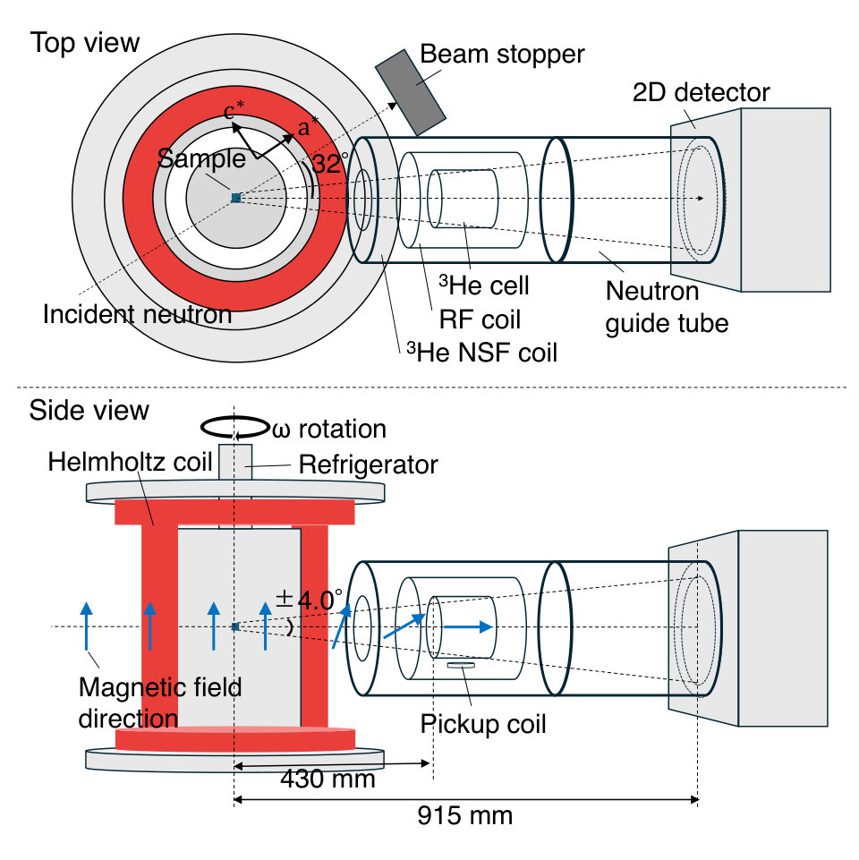
<figcaption class="paper-figure-caption"><b>Fig 2.</b> Figure 2: Schematic illustration of the experimental setup on the 5G beamport. Scattered neutrons from the sample pass through the 3He-NSF coil and the neutron guide tube before reaching the 2D detector. The sample is mounted in a cryostat whose rotation angle is denoted by ω. The magnetic field direction induced by the Helmholtz coil is vertical, whereas the field within the 3He-NSF is oriented along the beam axis. The neutron spins are adiabatically rotated to follow the field direction. A radio-frequency (RF) coil is used to flip the 3He polarization, and an NMR pickup coil monitors the 3He polarization after each spin flip.</figcaption>
</figure>
<figure class="paper-figure-card">
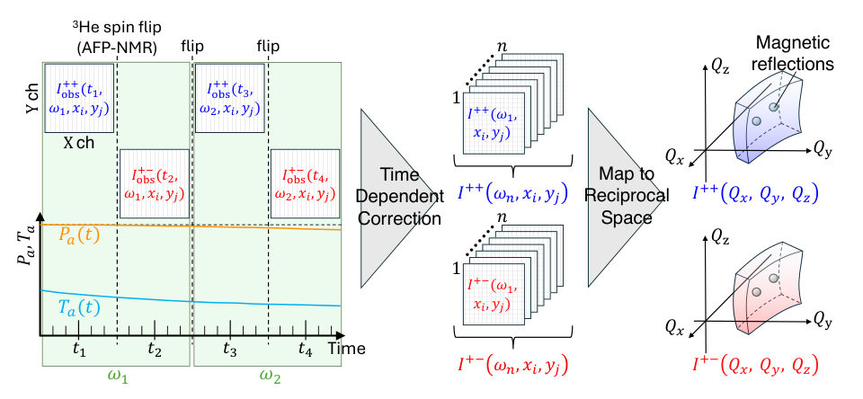
<figcaption class="paper-figure-caption"><b>Fig 3.</b> Figure 3: Schematic diagram of the data-reduction procedure for polarization analysis using an ex- situ 3He-NSF and a 2D detector. Raw 2D detector data measured at different sample rotation angles ω and times t are corrected for the time-dependent neutron polarization Pa(t) and transmission Ta(t) of the 3He-NSF. The detector coordinates (X,Y) and sample rotation angle ω are converted to Qx, Qy, Qz, and then transformed to H, K, L using the UB matrix. The corrected three-dimensional reciprocal-space data can then be sliced along an arbitrary plane.</figcaption>
</figure>
<figure class="paper-figure-card">

<figcaption class="paper-figure-caption"><b>Fig 4.</b> Figure 3 shows the procedure for data acquisition, reduction, and polarization correction in the</figcaption>
</figure>
<figure class="paper-figure-card">
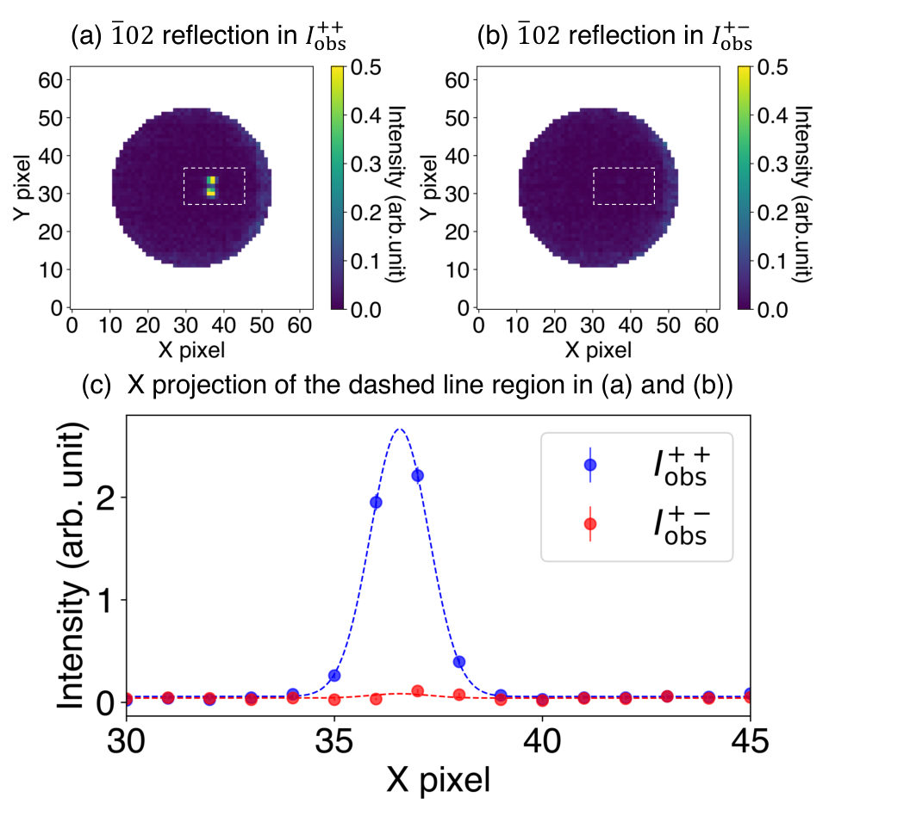
<figcaption class="paper-figure-caption"><b>Fig 5.</b> Figure 4: (a) Observed non-spin-flip (I++ obs ) and (b) spin-flip (I+− obs ) intensity maps, showing only the analyzing region. (c) Line profile along the X direction, obtained by integrating the intensity within the rectangular regions indicated by the dashed lines in (a) and (b).</figcaption>
</figure>
</div>

<p><strong>Summary.</strong> This paper introduces an advanced experimental technique using a $^3	ext{He}$ neutron spin filter and a $   ext{2D}$ detector to measure polarization-dependent neutron scattering in three dimensions. By applying this method to $    ext{Mn}_3   ext{WO}_6$, the authors successfully analyzed out-of-plane incommensurate magnetic reflections. This development overcomes the limitations of older setups, enabling detailed studies of complex magnetic structures like multiferroics.</p>
<p><strong>Why it may be interesting.</strong> This work represents a significant advancement in experimental techniques for probing magnetic order, providing a powerful tool to map magnetic structure in $3	ext{D}$ reciprocal space, which is crucial for understanding emergent phenomena in correlated materials.</p>
<details>
<summary>Detailed structure</summary>
<p><strong>Main problem.</strong> Studying complex, noncollinear, and incommensurate magnetic orders in condensed matter materials requires measurements that extend beyond the traditional horizontal scattering plane.</p>
<p><strong>Main result.</strong> The developed technique successfully measured polarization-dependent intensities of out-of-plane incommensurate magnetic reflections in $  ext{Mn}_3   ext{WO}_6$, confirming the suitability of the method for complex magnetic structure analysis.</p>
<p><strong>Method.</strong> The authors employed polarized neutron diffraction using an <em>ex-situ</em> $^3	ext{He}$ neutron spin filter ($    ext{}^3 ext{He-NSF}$) coupled with a two-dimensional ($  ext{2D}$) detector to analyze out-of-plane scattering polarization.</p>
<p><strong>Model / system.</strong> The experiment was performed on the multiferroic single crystal $   ext{Mn}_3   ext{WO}_6$. The methodology involves complex data reduction procedures to convert $ ext{2D}$ intensity maps into full $3	ext{D}$ reciprocal space distributions while correcting for time-dependent neutron polarization and transmission.</p>
<p><strong>Key observables.</strong> Polarization-dependent intensities of magnetic reflections, specifically the asymmetry value derived from non-spin-flip and spin-flip scattering intensities.</p>
<p><strong>Important parameters / regimes.</strong> The analysis is sensitive to the magnetic modulation wavevectors ($ ext{q-vectors}$) running in various directions, and the polarization analysis relies on measuring the asymmetry $   ext{Asymmetry} = (I^{++} - I^{+-}) / (I^{++} + I^{+-})$.</p>
<p><strong>Assumptions / limitations.</strong> Key assumptions include treating the polarizer transmission as constant and using time-dependent correction procedures based on the $    ext{}^3 ext{He}$ polarization measured via NMR.</p>
<p><strong>Figures summary.</strong> Figures illustrate the comparison between conventional in-plane measurements and the new out-of-plane capability; schematics detail the $  ext{}^3 ext{He-NSF}$/$  ext{2D}$ detector setup and the complex data reduction workflow.</p>
<p><strong>Paper structure.</strong> The paper first establishes the limitations of conventional setups, then details the novel experimental setup combining the $  ext{}^3 ext{He-NSF}$ and $  ext{2D}$ detector. It rigorously derives the time-dependent data reduction procedure, applies this method to $  ext{Mn}_3   ext{WO}_6$, and finally uses the measured polarization asymmetries to constrain the magnetic structure model.</p>
</details>
<details>
<summary>Abstract</summary>
<p>Polarized neutron scattering has been widely used for studying magnetic orders in condensed matter. A typical setup for this technique is a triple-axis spectrometer with a ferromagnetic single-crystal monochromator and analyzer, which is suited for point-by-point measurements within the horizontal scattering plane. However, this setup cannot fully meet the demands of recent studies on complex magnetic orders with emergent cross-correlated phenomena. For instance, multiferroics, magnetic skyrmions, and other topologically nontrivial magnetic orders tend to have incommensurate magnetic modulation vectors running along various directions in reciprocal space, which cannot be captured by measurements restricted to the horizontal scattering plane. To overcome these limitations, we have developed an experimental setup combining a $^3$He neutron spin filter ($^3$He-NSF) and a two-dimensional (2D) detector, which enables us to analyze the polarization of neutrons scattered away from the horizontal plane. We also establish a data reduction procedure to convert the 2D intensity maps into three-dimensional intensity distributions in reciprocal space, correcting for the effect of imperfect $^3$He polarization. This method is applied to single-crystal diffraction measurements on the multiferroic material Mn$_3$WO$_6$, which exhibits complex incommensurate magnetic orders. We have successfully observed polarization-dependent intensities of out-of-plane incommensurate magnetic reflections, demonstrating the effectiveness of the present method for analyzing complex magnetic structures.</p>
</details>
<p><sub><a href="#top">↑ back to top</a></sub></p>

<p><a id="paper-2610.10476"></a></p>
<h3 id="from-a-hierarchy-of-stochastic-differential-equations-to-a-hierarchy-of-generalized-beta-distributions"><a href="http://arxiv.org/abs/2610.10476v1">From a Hierarchy of Stochastic Differential Equations to a Hierarchy of Generalized Beta Distributions</a></h3>
<p><strong>Authors:</strong> Siqi Shao, R. A. Serota<br>
<strong>Type:</strong> theory · <strong>Category:</strong> statistical mechanics · <strong>PDF:</strong> <a href="https://arxiv.org/pdf/2610.10476v1">https://arxiv.org/pdf/2610.10476v1</a><br>
<strong>Analysis basis:</strong> full PDF text, analyzed in chunks
<strong>Topic relevance:</strong> <code>Keldysh / 2PI / non-Gaussian methods</code> <strong>1/5</strong> · <code>analog quantum simulation</code> <strong>1/5</strong> · <code>correlated / nonlocal dissipation</code> <strong>1/5</strong> · <code>driven-dissipative phase transition</code> <strong>1/5</strong> · <code>methods for driven-dissipative</code> <strong>1/5</strong> · <code>non-equilibrium universality</code> <strong>1/5</strong></p>
<div class="figure-strip-hint">↔ Scroll figures horizontally</div>
<div class="paper-figures-scroll">
<figure class="paper-figure-card">
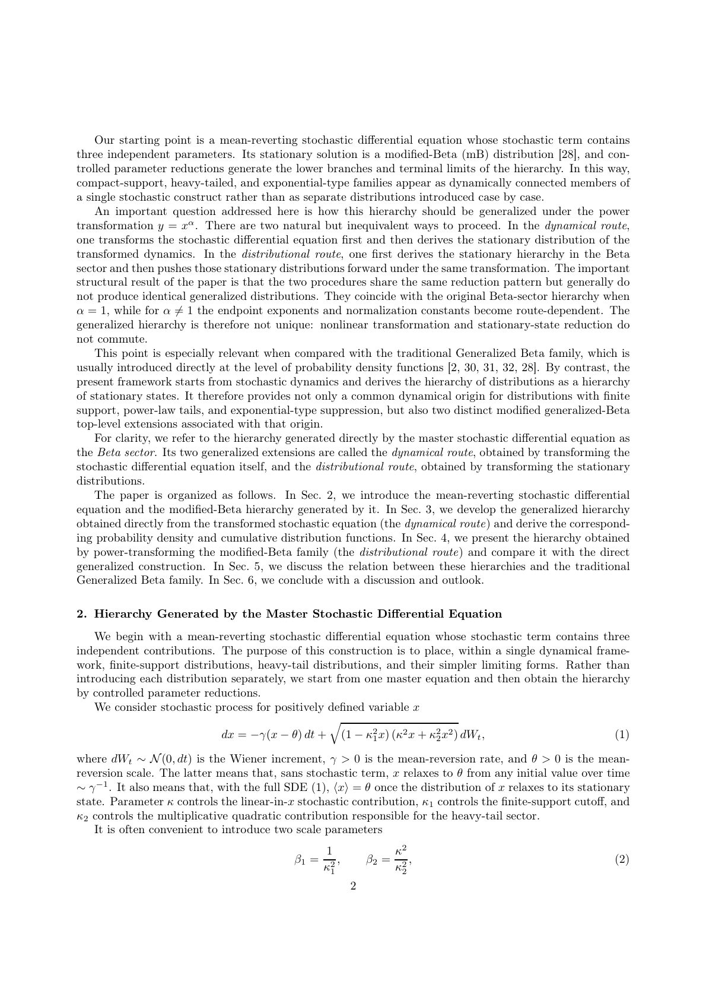
<figcaption class="paper-figure-caption"><b>Fig 1.</b> Low-resolution page preview, page 2</figcaption>
</figure>
<figure class="paper-figure-card">
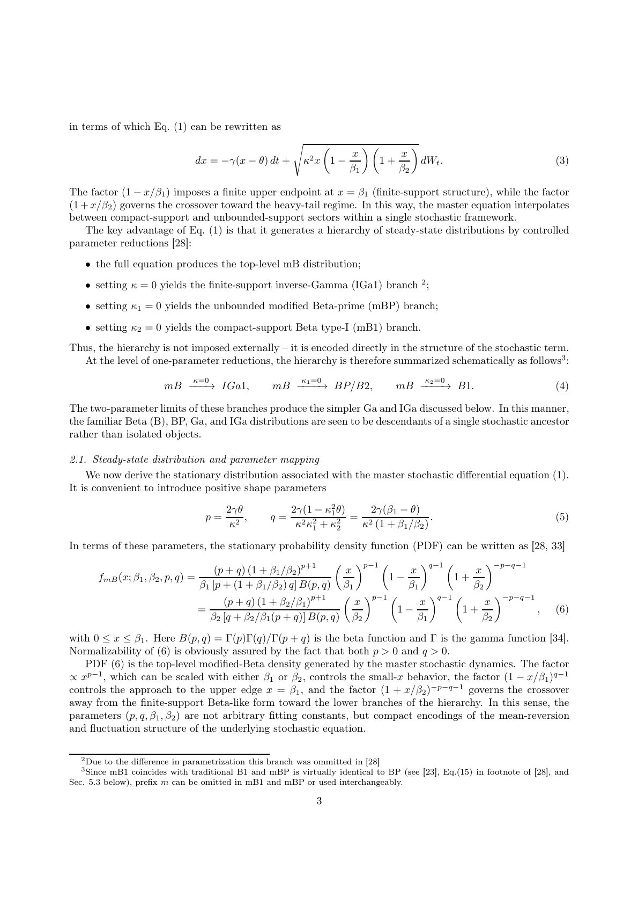
<figcaption class="paper-figure-caption"><b>Fig 2.</b> Low-resolution page preview, page 3</figcaption>
</figure>
<figure class="paper-figure-card">
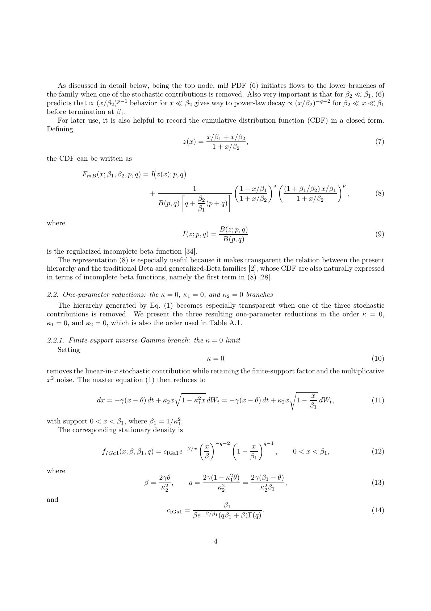
<figcaption class="paper-figure-caption"><b>Fig 3.</b> Low-resolution page preview, page 4</figcaption>
</figure>
<figure class="paper-figure-card">
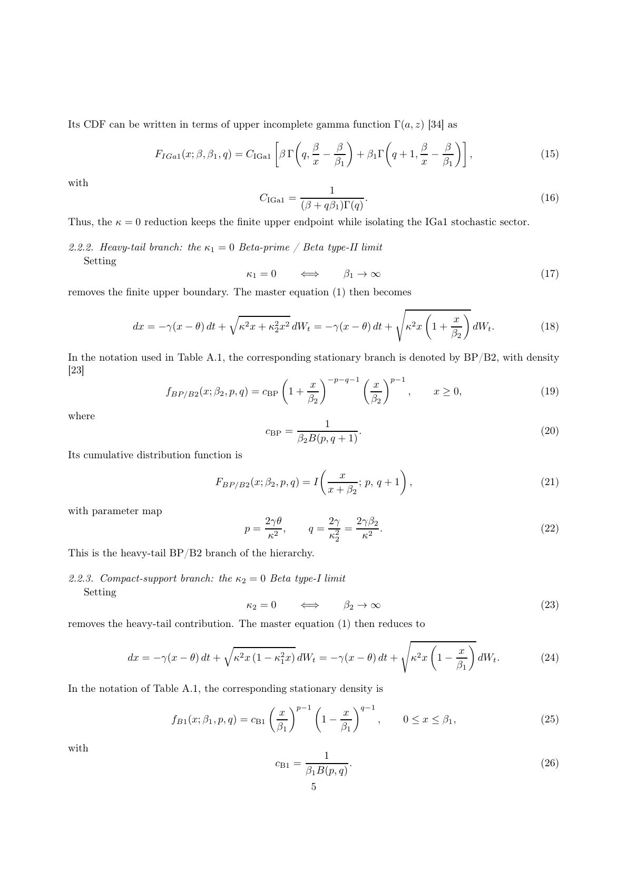
<figcaption class="paper-figure-caption"><b>Fig 4.</b> Low-resolution page preview, page 5</figcaption>
</figure>
<figure class="paper-figure-card">
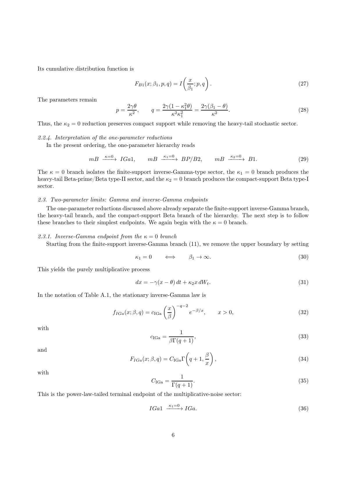
<figcaption class="paper-figure-caption"><b>Fig 5.</b> Low-resolution page preview, page 6</figcaption>
</figure>
</div>

<p><strong>Summary.</strong> This paper develops a comprehensive framework to characterize a hierarchy of probability distributions arising from a specific mean-reverting Stochastic Differential Equation. It introduces two methods—transforming the SDE versus transforming the stationary solutions—and proves that these two approaches yield different generalized distributions, highlighting a fundamental non-commutativity in the mathematical procedure.</p>
<p><strong>Why it may be interesting.</strong> While the focus is on classical stochastic processes, the mathematical machinery of deriving complex, multi-parameter distributions from underlying dynamics (SDEs) is highly relevant to modeling non-equilibrium steady states in quantum systems.</p>
<details>
<summary>Detailed structure</summary>
<p><strong>Main problem.</strong> The paper investigates the stationary distributions generated by a mean-reverting Stochastic Differential Equation (SDE) and explores how these distributions can be generalized.</p>
<p><strong>Main result.</strong> The authors show that generalizing the hierarchy via power transformations yields two distinct, non-commuting routes (dynamical vs. distributional), meaning the generalized hierarchy is not unique.</p>
<p><strong>Method.</strong> The methodology involves deriving stationary probability density functions (PDFs) from a master SDE and comparing results obtained by transforming the SDE versus transforming the resulting stationary PDFs.</p>
<p><strong>Model / system.</strong> The model is a mean-reverting SDE for a positively defined variable, which generates a hierarchy of distributions related to the Generalized Beta family. The analysis involves parameter reductions ($\kappa=0, \kappa_1=0, \kappa_2=0$) to map to known distributions.</p>
<p><strong>Key observables.</strong> Probability density functions (PDFs) and cumulative distribution functions (CDFs) for the modified-Beta (mB) and generalized mGB families.</p>
<p><strong>Important parameters / regimes.</strong> Mean-reversion rate ($\gamma$), mean-reversion scale ($  heta$), and stochastic coefficients ($\kappa, \kappa_1, \kappa_2$).</p>
<p><strong>Assumptions / limitations.</strong> The primary limitation noted is the non-commutativity of nonlinear transformation and stationary-state reduction, implying the generalized hierarchy is route-dependent.</p>
<p><strong>Figures summary.</strong> Figures illustrate the flow of the hierarchy in the Beta sector and the generalized sector via the two distinct transformation routes, while tables provide the explicit mathematical forms (PDFs/CDFs) for both generalized families.</p>
<p><strong>Paper structure.</strong> The paper first establishes the base hierarchy from the master SDE, then details two procedures for generalization (dynamical vs. distributional), and finally provides extensive mathematical tables comparing the resulting functional forms and parameters for both generalized families.</p>
</details>
<details>
<summary>Abstract</summary>
<p>We introduce a mean-reverting stochastic differential equation with a three-component stochastic term and show that it generates a hierarchy of steady-state (stationary) distributions. At the top level, the hierarchy is described by a modified-Beta distribution, while one- and two-parameter reductions produce compact-support, power-law-tailed, and exponential-type limiting families within a single stochastic framework.   We then construct two generalized extensions of this hierarchy. In the first, the power transformation is applied directly at the level of the stochastic differential equation; in the second, the same transformation is applied only after the stationary modified-Beta hierarchy has been obtained. While these two procedures agree on important lower branches and limiting cases they generally differ at the top level. The generalized hierarchy is therefore not unique: nonlinear transformation and stationary-state reduction do not commute.   For both routes, we derive the probability density and cumulative distribution functions, express their parameters in terms of the underlying stochastic dynamics, clarify the relations among their limiting cases, and compare the resulting families with the traditional Generalized Beta framework.</p>
</details>
<p><sub><a href="#top">↑ back to top</a></sub></p>

<p><a id="paper-2610.10037"></a></p>
<h3 id="matching-of-signal-noise-and-hardware-timescales-for-filtering-and-forecasting-of-correlated-noise-signals"><a href="http://arxiv.org/abs/2610.10037v1">Matching of signal, noise and hardware timescales for filtering and forecasting of correlated noise signals</a></h3>
<p><strong>Authors:</strong> Joshua Donald, Alex Gabbitas, Arthur G. T. Coveney, Sergey Savel'ev, Pavel Borisov<br>
<strong>Type:</strong> both · <strong>Category:</strong> disordered systems and neural networks · <strong>PDF:</strong> <a href="https://arxiv.org/pdf/2610.10037v1">https://arxiv.org/pdf/2610.10037v1</a><br>
<strong>Analysis basis:</strong> full PDF text, analyzed in chunks
<strong>Topic relevance:</strong> <code>analog quantum simulation</code> <strong>1/5</strong> · <code>correlated / nonlocal dissipation</code> <strong>1/5</strong> · <code>driven-dissipative phase transition</code> <strong>1/5</strong> · <code>methods for driven-dissipative</code> <strong>1/5</strong> · <code>non-equilibrium universality</code> <strong>1/5</strong> · <code>quantum measurements</code> <strong>1/5</strong></p>
<div class="figure-strip-hint">↔ Scroll figures horizontally</div>
<div class="paper-figures-scroll">
<figure class="paper-figure-card">
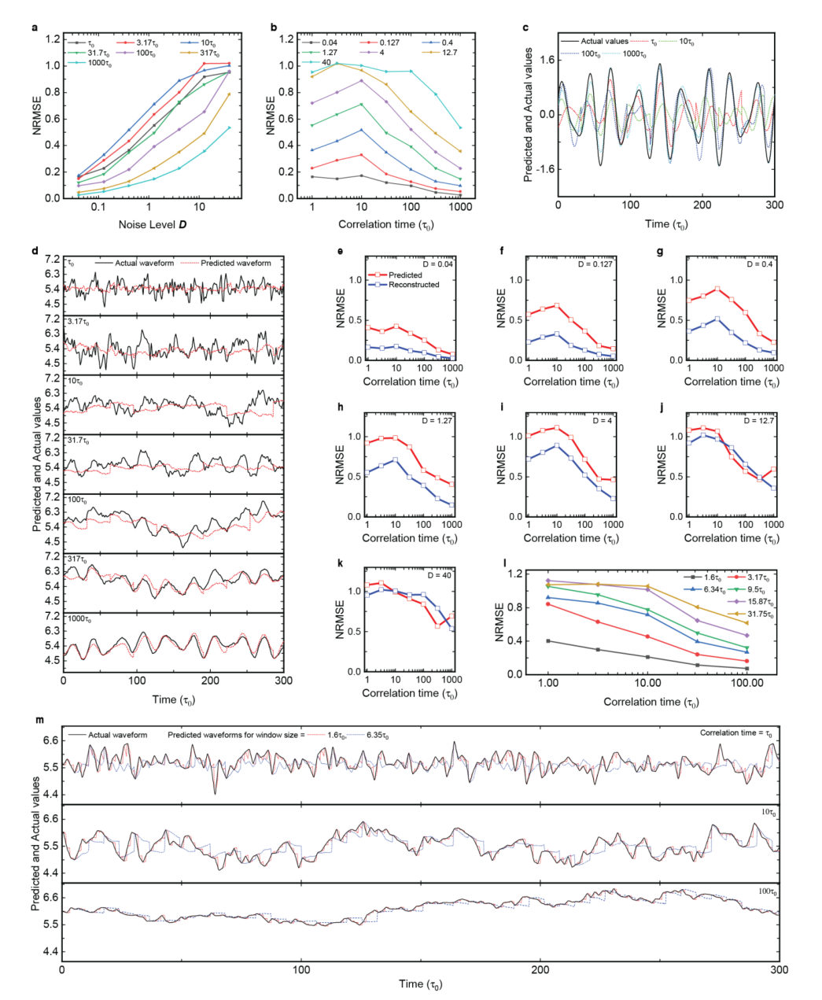
<figcaption class="paper-figure-caption"><b>Fig 1.</b> Fig. 2 | Reconstruction and prediction results for deterministic signals and coloured noise. a, NRMSE vs noise level D curves</figcaption>
</figure>
<figure class="paper-figure-card">
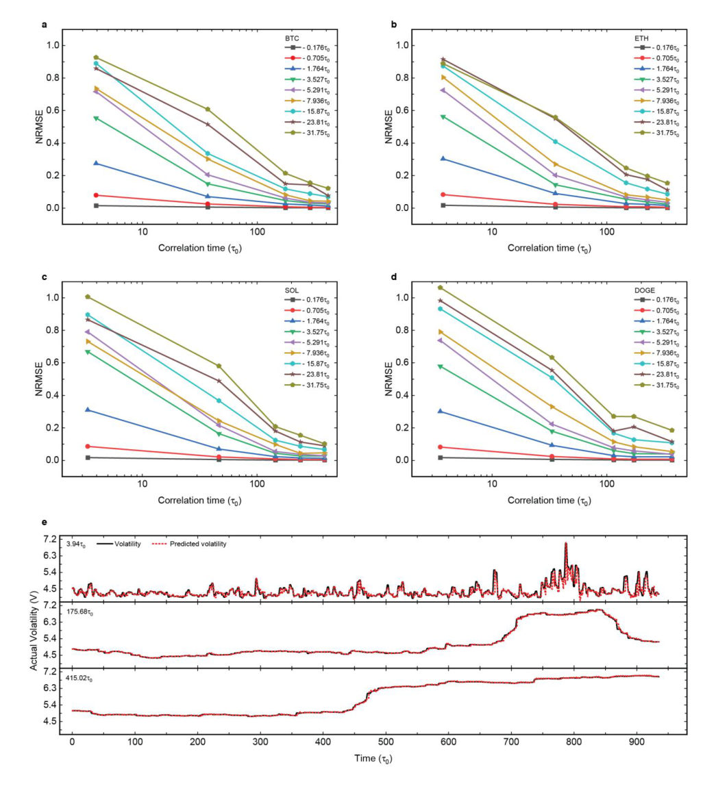
<figcaption class="paper-figure-caption"><b>Fig 2.</b> Fig. 3 | Forecasting of cryptocurrency prices volatility: a-d, NRMSE vs volatility correlation time τ curves for four cryptocur-</figcaption>
</figure>
<figure class="paper-figure-card">
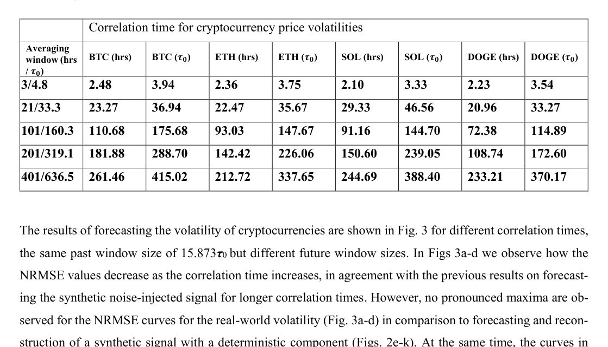
<figcaption class="paper-figure-caption"><b>Fig 3.</b> Fig. 3a-d show strong similarities with the ones for forecasting the coloured noise alone shown in Fig. 2l, see</figcaption>
</figure>
<figure class="paper-figure-card">
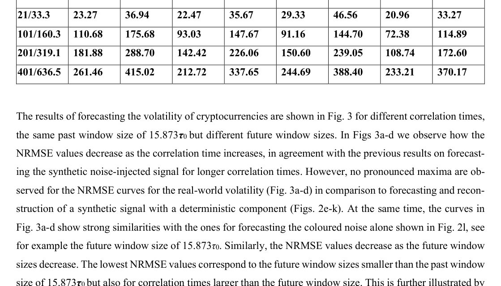
<figcaption class="paper-figure-caption"><b>Fig 4.</b> Fig. 3e which shows comparisons between the predicted (dotted red line) and target (solid black line) signals</figcaption>
</figure>
<figure class="paper-figure-card">
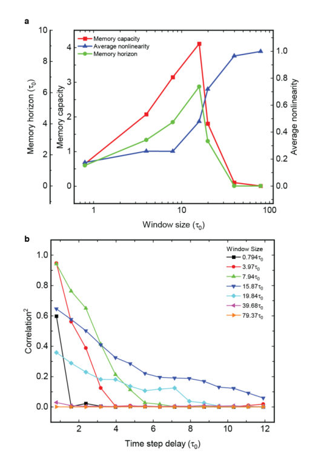
<figcaption class="paper-figure-caption"><b>Fig 5.</b> Fig. 4 | Memory capacity and nonlinearity measurements. a, Memory capacity (red squares), average nonlinearity (blue trian-</figcaption>
</figure>
</div>

<p><strong>Summary.</strong> This work investigates how physical reservoir computing can be optimized for filtering and predicting complex, noisy signals by precisely matching the timescales of the input noise, the hardware memory, and the required forecast window. Using a niobium oxide device, the authors demonstrate that understanding these timescale relationships allows for the development of new physical architectures capable of analyzing stochastic components across different temporal scales.</p>
<p><strong>Why it may be interesting.</strong> While focused on signal processing, the use of a physical, non-linear, time-dependent system (the reservoir) to process complex, multi-timescale data echoes concepts in open quantum systems where environmental coupling dictates observable dynamics.</p>
<details>
<summary>Detailed structure</summary>
<p><strong>Main problem.</strong> The paper addresses the challenge of filtering and forecasting correlated noise signals by establishing a relationship between the signal, noise, and hardware timescales.</p>
<p><strong>Main result.</strong> Timescale matching is crucial for physical reservoir computing, determining whether the noise is averaged out or if its temporal structure is sufficient for accurate algorithmic forecasting.</p>
<p><strong>Method.</strong> The authors use a physical reservoir computing setup, testing reconstruction and prediction tasks on synthetic colored noise and real cryptocurrency volatility data.</p>
<p><strong>Model / system.</strong> The physical platform is a nanoporous niobium oxide layer acting as a reservoir. The input signal is modeled as a sum of deterministic harmonics and colored noise, $\xi(t)$.</p>
<p><strong>Key observables.</strong> Normalized Root Mean Square Error (NRMSE), Signal-to-Noise Ratio (SNR), Reservoir Memory Horizon, and Forecasting Regime Index.</p>
<p><strong>Important parameters / regimes.</strong> Noise correlation time ($   au$), reservoir memory, and forecast horizon are the key interacting timescales.</p>
<p><strong>Assumptions / limitations.</strong> The performance of the physical reservoir is hypothesized to be governed by the matching of the three relevant timescales.</p>
<p><strong>Figures summary.</strong> Figures illustrate the reservoir signal processing overview, SNR vs. noise level, and performance metrics (NRMSE) for reconstruction and prediction across varying noise correlation times.</p>
<p><strong>Paper structure.</strong> The paper progresses from defining the problem (timescale matching) to detailing the physical setup and signal model, presenting results on reconstruction and prediction using synthetic and real-world data, and concluding with design principles based on operating regimes.</p>
</details>
<details>
<summary>Abstract</summary>
<p>Physical reservoir computing exploits the nonlinear dynamics of physical systems to process time-dependent data with greater energy efficiency than conventional machine learning approaches. However, physical reservoirs have fixed intrinsic response timescales, whereas real-world signals combine deterministic and stochastic components across multiple timescales. Here we show, using a nanoporous niobium oxide reservoir, synthetic noisy signals and cryptocurrency-price volatility, that the relationship among noise correlation time, reservoir memory and forecast horizon determines whether correlated noise is filtered or predicted. Noise varying faster than the relevant reservoir memory and forecast horizon is averaged by the reservoir, whereas the temporal structure of slower-varying noise is sufficient for algorithmic forecasting. We introduce the reservoir memory horizon and forecasting regime index to distinguish these operating regimes. These contributions demonstrate that timescale matching can guide the encoding of input time series and development of physical reservoir architectures that filter, analyse and predict stochastic signal components across distinct temporal scales.</p>
</details>
<p><sub><a href="#top">↑ back to top</a></sub></p>

<p><a id="paper-2610.08958"></a></p>
<h3 id="phase-diagram-of-a-semiflexible-magnetic-polymer-in-three-dimensions"><a href="http://arxiv.org/abs/2610.08958v1">Phase diagram of a semiflexible magnetic polymer in three dimensions</a></h3>
<p><strong>Authors:</strong> Linda Delimi, Arpan Dey, Jean-Charles Walter<br>
<strong>Type:</strong> theory · <strong>Category:</strong> statistical mechanics · <strong>PDF:</strong> <a href="https://arxiv.org/pdf/2610.08958v1">https://arxiv.org/pdf/2610.08958v1</a><br>
<strong>Analysis basis:</strong> full PDF text, analyzed in chunks
<strong>Topic relevance:</strong> <code>Frenkel-Kontorova</code> <strong>1/5</strong> · <code>Keldysh / 2PI / non-Gaussian methods</code> <strong>1/5</strong> · <code>analog quantum simulation</code> <strong>1/5</strong> · <code>methods for driven-dissipative</code> <strong>1/5</strong></p>
<div class="figure-strip-hint">↔ Scroll figures horizontally</div>
<div class="paper-figures-scroll">
<figure class="paper-figure-card">
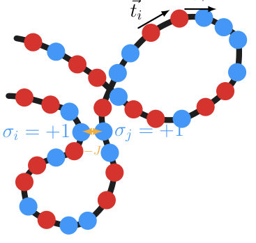
<figcaption class="paper-figure-caption"><b>Fig 1.</b> FIG. 1: Schematic of the semiflexible magnetic polymer. Each monomer carries a spin σi = ±1. Spatially neighbouring spins interact with coupling J and couple to an external field h, while consecutive bond tangents ˆti and ˆti+1 incur a bending penalty controlled by the stiffness κ.</figcaption>
</figure>
<figure class="paper-figure-card">
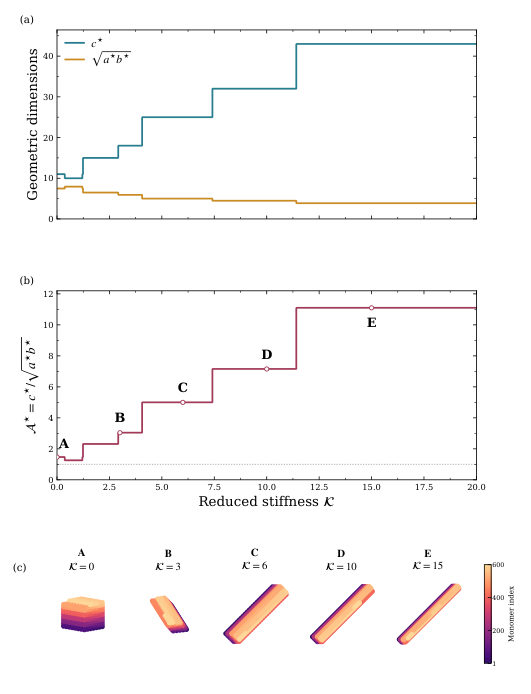
<figcaption class="paper-figure-caption"><b>Fig 2.</b> FIG. 2: Aspect ratio A⋆= c⋆/ √</figcaption>
</figure>
<figure class="paper-figure-card">
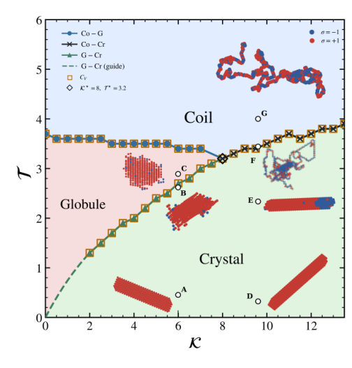
<figcaption class="paper-figure-caption"><b>Fig 3.</b> FIG. 3: Phase diagram of the semiflexible magnetic polymer at zero field for N = 600. The coil, globule, and crystal regimes are indicated in blue, pink, and green, respectively. Blue circles, green triangles, and black crosses correspond to the Co–G, G–Cr, and Co–Cr boundaries, respectively; open orange squares indicate the resolved peaks of CV . The dashed green line represents the indicative continuation of the crystalline boundary at low stiffness. The open diamond marks the triple point (K⋆, T ⋆). Configurations A–G illustrate representative conformations at the positions indicated by the open circles; monomers are colored according to their magnetic state, σ = −1 in blue and σ = +1 in...</figcaption>
</figure>
<figure class="paper-figure-card">
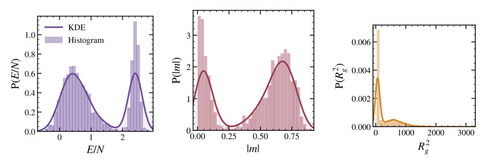
<figcaption class="paper-figure-caption"><b>Fig 4.</b> FIG. 4: Distributions of the observables in the vicinity of the Co–G transition. Distributions of the energy per monomer E/N (a), the absolute magnetization |m| (b), and the squared radius of gyration R2 g (c), for N = 600 and T = 3.375 at K = 6, approaching the critical value from below. The normalized histograms are complemented by Gaussian kernel density estimates (KDE).</figcaption>
</figure>
<figure class="paper-figure-card">
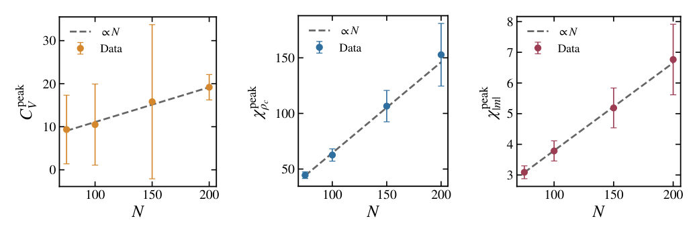
<figcaption class="paper-figure-caption"><b>Fig 5.</b> FIG. 5: Size dependence of the maxima of the response functions associated with the Co–G transition. Maximum of the heat capacity Cmax V (a), of the susceptibility associated with the contact density χmax ρc (b), and of the magnetic susceptibility χmax |m| (c), as a function of the chain length N, at K = 6, approaching from below. The circles represent the mean values obtained over the independent replicas, and the error bars their standard deviations. The dashed gray lines indicate the reference linear dependence Xmax ∝N.</figcaption>
</figure>
</div>

<p><strong>Summary.</strong> This work investigates the phase diagram of a semiflexible magnetic polymer, modeling systems like DNA complexes. By combining Monte Carlo simulations and variational theory, the authors map out how chain stiffness and magnetic interactions drive multiple first-order transitions between coil, globule, and crystal states. The results highlight the complex interplay between conformational entropy and magnetic ordering in soft matter systems.</p>
<p><strong>Why it may be interesting.</strong> The coupling between magnetic degrees of freedom and polymer conformation provides a rich model for studying coupled order parameters and phase transitions, relevant to many-body systems in condensed matter theory.</p>
<details>
<summary>Detailed structure</summary>
<p><strong>Main problem.</strong> To characterize the zero-field phase diagram of a semiflexible magnetic polymer as a function of bending stiffness and temperature.</p>
<p><strong>Main result.</strong> The phase diagram exhibits multiple first-order transitions, including coil-to-globule and globule-to-crystal transitions, demonstrating how stiffness and magnetic coupling reorganize the polymer's conformational landscape.</p>
<p><strong>Method.</strong> The study employs Monte Carlo simulations on an FCC lattice, complemented by a variational free-energy upper-bound approach to analyze the thermodynamic limits.</p>
<p><strong>Model / system.</strong> The model is a semiflexible magnetic polymer chain where each monomer has a two-state spin, coupling conformational energy (bending penalty $\kappa$) with magnetic interactions ($J$). It serves as a minimal representation of nucleoprotein complexes.</p>
<p><strong>Key observables.</strong> Contact Density ($
ho_c$), Magnetization ($\langle|m|
angle$), Nematic Order Parameter ($S$), and the overall phase diagram structure.</p>
<p><strong>Important parameters / regimes.</strong> Bending stiffness ($\kappa$), Temperature ($T$), and the ratio $K = \kappa/J$. The zero-field limit ($h=0$) is the primary focus.</p>
<p><strong>Assumptions / limitations.</strong> The analysis relies on the zero-field limit ($h=0$) and uses variational upper bounds for the crystalline phase, which assumes an ordered, maximally compact cylindrical bundle structure.</p>
<p><strong>Figures summary.</strong> Figures illustrate the schematic of the polymer, the evolution of ground state structure with stiffness, and the construction of the crystalline upper bound using a cylindrical bundle.</p>
<p><strong>Paper structure.</strong> The paper systematically analyzes the Hamiltonian, first characterizing the zero-field phase diagram using simulations, then deriving analytical upper bounds for the crystalline phase, and finally mapping out the sequence of transitions based on the competition between bending costs and magnetic/contact energies.</p>
</details>
<details>
<summary>Abstract</summary>
<p>We study a semiflexible magnetic polymer in which each monomer carries a two-state spin, giving rise to coupled conformational, stiffness, and magnetic degrees of freedom. The model provides a minimal representation of nucleoprotein complexes in vivo, in which DNA bending rigidity and bridging proteins must be simultaneously accommodated. We employ Monte Carlo simulations on a face-centered-cubic (FCC) lattice, complemented by a variational free-energy upper-bound approach, to characterize the zero-field phase diagram as a function of bending stiffness and temperature. At low stiffness, we identify a first-order transition combining coil-to-globule collapse with a ferromagnetic-to-paramagnetic transition. At lower temperatures, an additional first-order transition separates the disordered globule from an ordered crystal characterized by nematic-like orientational order of the bond tangents. At high stiffness, the globule disappears, resulting in a direct first-order coil-to-crystal transition. These results demonstrate how chain stiffness and magnetic degrees of freedom couple to polymer conformation and reorganize the zero-field phase diagram. Our model connects the two limiting cases of flexible magnetic polymers and semiflexible homopolymers, the latter corresponding to the strong-field limit in which all spins are aligned.</p>
</details>
<p><sub><a href="#top">↑ back to top</a></sub></p>

<p><a id="paper-2610.10412"></a></p>
<h3 id="magnetic-order-from-first-principles-linear-response"><a href="http://arxiv.org/abs/2610.10412v1">Magnetic Order from First-Principles Linear Response</a></h3>
<p><strong>Authors:</strong> Yaroslav Zhumagulov, Emiliano Cruz-Aranda, Denis Kochan, Oleg V. Yazyev<br>
<strong>Type:</strong> theory · <strong>Category:</strong> strongly correlated electrons · <strong>PDF:</strong> <a href="https://arxiv.org/pdf/2610.10412v1">https://arxiv.org/pdf/2610.10412v1</a><br>
<strong>Analysis basis:</strong> full PDF text, analyzed in chunks
<strong>Topic relevance:</strong> <code>Keldysh / 2PI / non-Gaussian methods</code> <strong>1/5</strong> · <code>analog quantum simulation</code> <strong>1/5</strong> · <code>quantum measurements</code> <strong>1/5</strong></p>
<div class="figure-strip-hint">↔ Scroll figures horizontally</div>
<div class="paper-figures-scroll">
<figure class="paper-figure-card">

<figcaption class="paper-figure-caption"><b>Fig 1.</b> FIG. 1. Leading KV2Se2O response eigenvectors for C-type stacking at q = 0 in panels a and b and G-type stacking at q = (0, 0, 1</figcaption>
</figure>
<figure class="paper-figure-card">

<figcaption class="paper-figure-caption"><b>Fig 2.</b> FIG. 2. Leading Γ-point response eigenvectors of Cu2OSeO3: (a) the state of the threefold-degenerate T mode whose net moment points along [111] and (b) the nearly degenerate, fully symmetric A mode. A cubic Cu2OSeO3 cell holds the four Cu4 tetrahedra. Each tetrahedron has one Cu1 site at the 4a Wyckoff position (blue) and three Cu2 sites at the 12b position (red). Arrows indicate the site magnetic moments: in each tetrahedron, for both modes, the blue moment is directed opposite to the sum of the three red moments, corresponding to a 3:1 ferrimagnetic configuration. In the A mode, the four moments of the tetrahedron are directed along the four ⟨111⟩-type directions and mutually cancel out.</figcaption>
</figure>
<figure class="paper-figure-card">

<figcaption class="paper-figure-caption"><b>Fig 3.</b> FIG. 3. Leading response eigenvalue λmax(q) ≡λq of mono- layer NiI2 over the irreducible part of the Brillouin zone, the triangle Γ–M–K. Dashed lines mark the Γ–M–K–Γ bound- ary, and the solid arc marks the fitted mean radius |q∗| = 0.284 (2π/a) of the ridge of large eigenvalues, with a the in-plane lattice constant. The axes are the in-plane Carte- sian components qx and qy of q, and Γ, M, and K are high- symmetry points.</figcaption>
</figure>
</div>

<p><strong>Summary.</strong> This work presents a novel, unbiased theoretical method to predict magnetic order by analyzing the leading eigenmodes of the magnetization response within the paramagnetic state. By applying this technique to materials like $  ext{KV}_2   ext{Se}_2   ext{O}$ and $   ext{NiI}_2$, the authors successfully reproduce complex magnetic structures without needing to assume the final ordered state beforehand.</p>
<p><strong>Why it may be interesting.</strong> While focused on condensed matter magnetism, the use of linear response theory to probe instabilities from a non-interacting (paramagnetic) reference state is a powerful, generalizable technique for identifying emergent collective behavior, which has parallels in open quantum system dynamics.</p>
<details>
<summary>Detailed structure</summary>
<p><strong>Main problem.</strong> Traditional methods for predicting magnetic order are limited to predefined spin configurations and become computationally intractable for large systems.</p>
<p><strong>Main result.</strong> The magnetic order can be predicted unbiasedly by analyzing the leading eigenmodes of the self-consistent magnetization response calculated from the paramagnetic state.</p>
<p><strong>Method.</strong> The method involves solving a linearized eigenvalue problem derived from the self-consistent magnetization response function, incorporating spin-orbit coupling.</p>
<p><strong>Model / system.</strong> The study applies this method to various magnetic materials, including $    ext{KV}_2   ext{Se}_2   ext{O}$, $  ext{Cu}_2   ext{OSeO}_3$, and monolayer $   ext{NiI}_2$, which are characterized by complex magnetic interactions.</p>
<p><strong>Key observables.</strong> The largest eigenvalue ($\lambda_{\mathbf{q}}$) and its corresponding eigenvector ($oldsymbol{\phi}_{\mathbf{q}}$) determine the magnetic instability, wavevector ($\mathbf{q}$), and pattern of magnetic moments.</p>
<p><strong>Important parameters / regimes.</strong> Spin-Orbit Coupling (SOC), wavevector ($\mathbf{q}$), and the instability threshold ($\lambda_{\mathbf{q}} = 1$).</p>
<p><strong>Assumptions / limitations.</strong> The method assumes that the leading eigenmodes of the paramagnetic state response are sufficient to capture the true magnetic ground state, overcoming the limitations of pre-selected configurations.</p>
<p><strong>Figures summary.</strong> Figure 1 illustrates the leading response eigenvectors for $   ext{KV}_2   ext{Se}_2   ext{O}$ for both C-type and G-type stacking, visualizing the magnetization components.</p>
<p><strong>Paper structure.</strong> The paper introduces the limitations of prior methods, details the theoretical framework using linear response theory on the paramagnetic state, and then applies this framework to calculate and distinguish between known magnetic orders in several distinct materials.</p>
</details>
<details>
<summary>Abstract</summary>
<p>The magnetic order of a material is usually predicted by comparing the energies of trial spin configurations, a strategy that cannot reach orders outside the chosen set and rapidly becomes intractable as the number of magnetic sites grows. We show that the order can instead be identified directly from the paramagnetic state: the leading eigenmodes of its self-consistent magnetization response, obtained with spin--orbit coupling at arbitrary wavevector within the primitive cell, determine both the ordering wavevector and the pattern of moments, with no candidate configurations. With no prior assumption about the order, the method correctly reproduces the G-type stacking with out-of-plane moments in the altermagnet candidate KV$_2$Se$_2$O, the $3{:}1$ ferrimagnetic tetrahedra of Cu$_2$OSeO$_3$, and the incommensurate spiral instability of monolayer NiI$_2$. Our results establish the response of the paramagnetic state as a predictive and unbiased route to assessing magnetic order, enabling systematic searches for complex magnets.</p>
</details>
<p><sub><a href="#top">↑ back to top</a></sub></p>

<p><a id="paper-2610.10097"></a></p>
<h3 id="percolation-on-interdependent-one-dimensional-long-range-networks"><a href="http://arxiv.org/abs/2610.10097v1">Percolation on interdependent one-dimensional long-range networks</a></h3>
<p><strong>Authors:</strong> Adar Sharabi, Amir Bashan, Sergey V. Buldyrev, Guy Amit<br>
<strong>Type:</strong> theory · <strong>Category:</strong> statistical mechanics · <strong>PDF:</strong> <a href="https://arxiv.org/pdf/2610.10097v1">https://arxiv.org/pdf/2610.10097v1</a><br>
<strong>Analysis basis:</strong> full PDF text, analyzed in chunks
<strong>Topic relevance:</strong> <code>analog quantum simulation</code> <strong>1/5</strong> · <code>driven-dissipative phase transition</code> <strong>1/5</strong> · <code>non-equilibrium universality</code> <strong>1/5</strong></p>
<div class="figure-strip-hint">↔ Scroll figures horizontally</div>
<div class="paper-figures-scroll">
<figure class="paper-figure-card">

<figcaption class="paper-figure-caption"><b>Fig 1.</b> FIG. 1. Schematic description of the model. Two layers, A and B, are infinite one-dimensional lattices. In each layer, two nodes i and j at a distance r = |i −j| are connected with probability pr = C/r1+σ, independently of all other pairs and of the other layer. Node i of A is connected with a dependency link to node i of B (dashed lines), such that node i of A is functional only if its corresponding node in B is also functional. Filled circles: an example of a set of functional nodes, which form a connected cluster in each of the two layers. Empty circles: nodes that are not functional, since in at least one of the layers they are not connected to this cluster. The links of these nodes...</figcaption>
</figure>
<figure class="paper-figure-card">

<figcaption class="paper-figure-caption"><b>Fig 2.</b> FIG. 2. Tree approximation. (a) Graphical solution of Eq. (15) for σ = 0.5. The right-hand side, q(CP∞)2, starts with zero slope, so a non-zero solution (an intersection with the diagonal) exists only if C ≥Ctree mul , where the curve touches the diagonal at P ⋆ ∞. For C &gt; Ctree mul the curve crosses the diagonal at two points: the stable solution (filled circle) and the unstable one (open circle). (b) The value of C belonging to each u = CP∞, for one layer, Eq. (13), and for the multiplex, C = u/q(u)2. For one layer the minimum is at u →0, where C = CS; for the multiplex the minimum, Ctree mul , is at a finite u⋆. (c) Size of the mutual giant component as a function of C: tree...</figcaption>
</figure>
<figure class="paper-figure-card">

<figcaption class="paper-figure-caption"><b>Fig 3.</b> FIG. 3. Simulations of the multiplex. (a) Method 1, shown for one realization with σ = 0.2 and N = 220. Line: P mul ∞(C) of the realization. Circles: the values of C at which it was calculated. The height of the largest jump is ∆, and its position is the estimate of Cmul c . (b) Method 2: number of cascade iterations (NOI) as a function of C, for N = 105 (dashed lines, 30 realizations) and N ≈106 (solid lines, 10 realizations). The position of the maximum is the estimate of Cmul c . (c) P mul ∞(C) of single realizations with N = 210 and N = 220. The circles mark the two ends of the largest jump of each realization (open circles: N = 210; filled circles: N = 220). For σ = 0.2 the mutual...</figcaption>
</figure>
<figure class="paper-figure-card">

<figcaption class="paper-figure-caption"><b>Fig 4.</b> FIG. 4. Critical values of C as functions of σ. Lines: the bounds CS, C∗, C∗∗and the tree approximation Ctree mul . Triangles: single- layer threshold [51]. Symbols: simulated multiplex threshold from Method 1 (squares; largest size simulated, N = 216 to 220), from Method 2 with N = 105 (circles; the deviation at small σ is the finite- size effect of Eq. (21)), and from Method 2 with N ≈106 (small diamonds). Gray band: 0.35 &lt; σ &lt; 0.4, where the simulations indicate that the transition changes from first order (smaller σ) to continuous (larger σ).</figcaption>
</figure>
</div>

<p><strong>Summary.</strong> This paper analyzes percolation in a multiplex network composed of two interdependent 1D long-range lattices. It determines the critical coupling strength required for the existence of a mutual giant component. A key finding is that the transition's nature (first-order vs. continuous) is fundamentally controlled by the decay exponent $\sigma$ of the long-range interactions.</p>
<p><strong>Why it may be interesting.</strong> While focused on classical percolation, the concept of network robustness and phase transitions in coupled systems shares mathematical parallels with critical phenomena studied in quantum many-body systems, particularly concerning connectivity and failure modes.</p>
<details>
<summary>Detailed structure</summary>
<p><strong>Main problem.</strong> The study investigates the emergence and critical conditions for a mutual giant component in a multiplex network formed by two interdependent one-dimensional long-range networks.</p>
<p><strong>Main result.</strong> The multiplex network is significantly less stable than a single layer, and the order of the percolation transition depends critically on the decay exponent $\sigma$, changing from first-order to continuous as $\sigma$ increases.</p>
<p><strong>Method.</strong> The authors employ theoretical analysis, deriving rigorous lower bounds, and utilizing a tree approximation to estimate the critical percolation threshold ($C_c$).</p>
<p><strong>Model / system.</strong> The model is a multiplex network of two layers on $\mathbb{Z}$, where intra-layer links decay algebraically as $p_r \propto r^{-(1+\sigma)}$. Interdependence is established via links connecting corresponding nodes in both layers.</p>
<p><strong>Key observables.</strong> Mutual Giant Component (MGC) existence, the critical thresholds ($C_{	ext{single}}^c$ and $C_{	ext{mul}}^c$), and the order of the phase transition (first-order vs. continuous).</p>
<p><strong>Important parameters / regimes.</strong> The decay exponent $\sigma$ ($0 < \sigma < 1$) and the coupling strength parameter $C$ are crucial. The transition order changes around $\sigma \approx 0.35$ to $0.4$.</p>
<p><strong>Assumptions / limitations.</strong> The analysis relies on a tree approximation, which is noted to be highly accurate (within 0.6%) for $\sigma \le 0.5$ but fails to capture the transition order for larger $\sigma$.</p>
<p><strong>Figures summary.</strong> The figures illustrate the schematic of the two-layer network, comparing the critical thresholds derived from the single-layer and multiplex tree approximations.</p>
<p><strong>Paper structure.</strong> The paper progresses by defining the multiplex model, deriving theoretical bounds for the critical threshold, applying a tree approximation to estimate the threshold, and finally analyzing how the transition order changes as a function of the decay exponent $\sigma$.</p>
</details>
<details>
<summary>Abstract</summary>
<p>We study the emergence of a mutual giant component in a multiplex network comprised of two one-dimensional long-range networks on a lattice. The probability that two nodes on one lattice, with a distance $r$ between them, are connected with an edge falls algebraically with distance as $Cr^{-(1+σ)}$, where $0 < σ< 1$ and $0 < C \leq 1$. A mutual giant component exists if $C > C_c^{\mathrm{mul}}$, where $C_c^{\mathrm{mul}}(σ)$ is a critical value of $C$ that is dependent on $σ$. We find rigorous lower bounds on $C_c^{\mathrm{mul}}$, and a tree approximation whose estimate of $C_c^{\mathrm{mul}}$ agrees with simulations within 0.6% for $σ\leq 0.5$. The multiplex network is significantly less stable than the single network case, as is evident by the larger value of $C_c^{\mathrm{mul}}$, which is up to 2.4 times the single-layer value. Our simulations indicate that the order of the transition depends on $σ$. For $σ\leq 0.35$ the mutual giant component collapses abruptly, in a first-order phase transition, while for $σ\geq 0.4$ the transition is continuous. When the dependency links connect random pairs of nodes, the transition is first order for all $σ$.</p>
</details>
<p><sub><a href="#top">↑ back to top</a></sub></p>

<p><a id="paper-2610.09388"></a></p>
<h3 id="bottom-up-prediction-of-amorphous-poly13-dioxolane-using-ab-initio-reactive-machine-learning-force-fields"><a href="http://arxiv.org/abs/2610.09388v1">Bottom-Up Prediction of Amorphous Poly(1,3-dioxolane) using Ab Initio Reactive Machine-Learning Force Fields</a></h3>
<p><strong>Authors:</strong> Yizhi Song, Bharatha K. Gunawardana, Kriti Alam, Teresa Shah, Deepa Ranabhat, Hsin-Yu Ko<br>
<strong>Type:</strong> theory · <strong>Category:</strong> disordered systems and neural networks · <strong>PDF:</strong> <a href="https://arxiv.org/pdf/2610.09388v1">https://arxiv.org/pdf/2610.09388v1</a><br>
<strong>Analysis basis:</strong> full PDF text, analyzed in chunks
<strong>Topic relevance:</strong> <code>interference shaping light</code> <strong>1/5</strong> · <code>methods for driven-dissipative</code> <strong>1/5</strong></p>
<div class="figure-strip-hint">↔ Scroll figures horizontally</div>
<div class="paper-figures-scroll">
<figure class="paper-figure-card">

<figcaption class="paper-figure-caption"><b>Fig 1.</b> FIG. 1. Cationic ring-opening polymerization of 1,3-dioxolane as simulated in this work. (1) An oxygen of an incoming DXL monomer attacks the carbon adjacent to the protonated chain end, breaking the C–O bond and opening the ring; the reacting atoms are circled in the ball-and-stick representation. (2) The resulting dimer carries the positive charge on the new terminal ring, so the same ele- mentary step repeats. (n) Propagation to a degree of polymerization n. Left: Lewis structures, with curved arrows indicating electron flow. Right: corresponding configurations taken from the trajecto- ries (C grey, O red, H white); the lowest panel shows a representative 100-mer. The unreacted DXL...</figcaption>
</figure>
<figure class="paper-figure-card">

<figcaption class="paper-figure-caption"><b>Fig 2.</b> FIG. 2. Heavy-atom (C–C, C–O and O–O) partial radial distribution functions gαβ (r) of the full system at n = 4, 64 and 100. The dashed line marks gαβ = 1. Curves are averaged over 40 independent trajectories; shaded bands denote the standard error of the mean.</figcaption>
</figure>
<figure class="paper-figure-card">

<figcaption class="paper-figure-caption"><b>Fig 3.</b> FIG. 3. Statistical convergence of the predicted heavy-atom correlations with ensemble size. Standard error of the mean, σ/ √</figcaption>
</figure>
<figure class="paper-figure-card">

<figcaption class="paper-figure-caption"><b>Fig 4.</b> FIG. 4. (a) Mean end-to-end distance ⟨R⟩versus degree of polymerization n, averaged over 40 independent chain-growth trajectories; the shaded band is the standard error of the mean, σR/ √</figcaption>
</figure>
<figure class="paper-figure-card">

<figcaption class="paper-figure-caption"><b>Fig 5.</b> FIG. 5. Predicted interference functions of the full simulation cell at degrees of polymerization n = 2, 4, 8, 16, 32, 64 and 100. (a) X-ray, FX(q). (b) Representative configuration of the simulation cell at n = 32, with the growing chain shown in green and the unreacted DXL monomers in red, white and grey. (c) Neutron for the fully hydrogenated polymer, F(H) N (q). (d) Neutron for the fully deuterated polymer, F(D) N (q). Curves are averaged over 40 independent chain-growth trajectories and shaded bands denote the standard error of the mean. Coherent scattering lengths are taken from Ref. 52.</figcaption>
</figure>
</div>

<p><strong>Summary.</strong> This work pioneers the use of AI-accelerated simulations to predict the atomic structure of amorphous polymers like pDXL by simulating their synthesis. By analyzing the resulting ensemble microstructures, the authors successfully deconvolute the measured diffraction signal into distinct contributions from the monomer and the growing polymer chain. This provides a powerful, first-principles method for validating polymer structure against experimental scattering data.</p>
<p><strong>Why it may be interesting.</strong> The use of ML-force fields trained on quantum mechanical data (DFT) to simulate complex, disordered polymer growth processes is highly relevant to ML-physics, providing a predictive tool for materials structure.</p>
<details>
<summary>Detailed structure</summary>
<p><strong>Main problem.</strong> The challenge is to determine the atomistic microstructure of amorphous Poly(1,3-dioxolane) (pDXL) and predict its experimentally measurable scattering signals.</p>
<p><strong>Main result.</strong> The primary diffraction peak is revealed to be a sum of two counteracting modes: a decaying monomer contribution ($\approx 1.5 	ext{ Å}^{-1}$) and a growing polymer contribution ($\approx 1.6 	ext{ Å}^{-1}$).</p>
<p><strong>Method.</strong> The authors employed an AI-accelerated <em>ab initio</em> bottom-up polymer structure prediction (AI2-BPSP) framework to simulate the living cationic ring-opening polymerization.</p>
<p><strong>Model / system.</strong> The system is amorphous pDXL undergoing polymerization. The simulation uses a Machine-Learning Force Field trained on DFT data to model bond breaking and formation during the polymerization process.</p>
<p><strong>Key observables.</strong> X-ray and neutron interference functions ($F_X(q)$, $F_N(q)$), partial radial distribution functions ($g_{\alphaeta}(r)$), and partial structure factors ($S_{\alphaeta}(q)$).</p>
<p><strong>Important parameters / regimes.</strong> Chain length ($n$, up to 100-mer), temperature (300 K), and pressure (1 bar).</p>
<p><strong>Assumptions / limitations.</strong> The MLFF is assumed transferable from short oligomers to the macromolecular limit, and the ensemble is not assumed to be at true equilibrium due to finite simulation time.</p>
<p><strong>Figures summary.</strong> Figures illustrate the polymerization steps, partial radial distribution functions at various chain lengths, statistical convergence of structural metrics, and the predicted interference functions showing the separation of monomer and polymer contributions.</p>
<p><strong>Paper structure.</strong> The paper details the AI2-BPSP workflow, simulating polymerization to generate ensembles of microstructures. It then analyzes the resulting structures by calculating partial structure factors and predicting the total X-ray and neutron scattering functions, emphasizing the separation of contributions from the monomer and the growing polymer backbone.</p>
</details>
<details>
<summary>Abstract</summary>
<p>Poly(1,3-dioxolane) (pDXL) is a chemically recyclable polyether that can be synthesized by living cationic ring-opening polymerization with precise control of chain length into the ultra-high-molecular-weight (UHMW) regime, where it acquires enhanced mechanical properties. Like most polymers, however, it has amorphous condensed-phase structure, and diffraction measurements alone cannot resolve the atomistic microstructure that underlies them. In this work, we predict the ensemble of the pDXL microstructures by applying a recently developed AI-accelerated ab initio bottom-up polymer structure prediction (AI$^{2}$-BPSP) framework that simulates the living polymerization of pDXL under experimental synthetic conditions with machine-learning force fields trained within van der Waals-corrected hybrid density functional theory. Partitioning the predicted X-ray and neutron diffraction signal between the growing chain and the surrounding monomer resolves its dominant feature into two counteracting modes: a monomer contribution near $q \approx 1.5$ Å$^{-1}$ that decays as monomer is consumed, and a polymer contribution near $q \approx 1.6$ Å$^{-1}$ that is absent in oligomers and grows with chain length. This work paves the way to direct accuracy validation of these statistically significant, first-principles, and chain-length resolved diffraction predictions against experiments.</p>
</details>
<p><sub><a href="#top">↑ back to top</a></sub></p>

<p><a id="paper-2610.10040"></a></p>
<h3 id="can-we-make-sense-out-of-negative-kinetic-energy"><a href="http://arxiv.org/abs/2610.10040v1">Can we make sense out of negative kinetic energy?</a></h3>
<p><strong>Authors:</strong> Alessio Maiezza, Fabrizio Nesti<br>
<strong>Type:</strong> theory · <strong>Category:</strong> other · <strong>PDF:</strong> <a href="https://arxiv.org/pdf/2610.10040v1">https://arxiv.org/pdf/2610.10040v1</a><br>
<strong>Analysis basis:</strong> full PDF text, analyzed in chunks
<strong>Topic relevance:</strong> <code>Keldysh / 2PI / non-Gaussian methods</code> <strong>1/5</strong> · <code>quantum measurements</code> <strong>1/5</strong></p>
<div class="figure-strip-hint">↔ Scroll figures horizontally</div>
<div class="paper-figures-scroll">
<figure class="paper-figure-card">

<figcaption class="paper-figure-caption"><b>Fig 1.</b> Figure 1: Diagonalization for λ = 0.1, 1, 10, 30, 60, 100, 300 (and n = 50). For each λ, eigenvalues are shown as blue dots, with the size proportional to the overlap coefficient c(n) i . The majority of eigenvalues, having negligible overlap, are still shown with minimal dot size. The blue(yellow) curves represent the ground state energy in perturbation theory at 1st(6th) order. The plot can be extended to negative λ, with an analogous (non symmetric) result. Notice the “sinh” scales on both axes.</figcaption>
</figure>
<figure class="paper-figure-card">

<figcaption class="paper-figure-caption"><b>Fig 2.</b> Figure 2: Convergence of the largest overlap coefficient with the initial state c(n) 0 , for increasing n. A good convergence is obtained up to λ = 30, whereas the overlaps reach a constant value. The convergence is slightly spoiled for larger value of the coupling.</figcaption>
</figure>
<figure class="paper-figure-card">

<figcaption class="paper-figure-caption"><b>Fig 3.</b> Figure 2 we plot the c(n) i for a sequence of values of n, and a few choices of λ. One can notice that for small couplings, λ &lt; 30 the coefficients converge, while for λ ≳30 they oscillate slightly around some constant value, still indicating a signal of convergence that may be improved by increasing N.</figcaption>
</figure>
<figure class="paper-figure-card">

<figcaption class="paper-figure-caption"><b>Fig 4.</b> Figure 3: Evolution in time of the survival probability. The plot is cut at t = 100 but the curves for λ = 1, 30 are reliably cutoff independent to much larger time. Instead the curves for λ = 100, 300 are stopped at time until which cutoff independence is verified (see text). In every case, instead of a decay in time, we uncover an oscillatory regime at late time, with residual probability which is increasingly suppressed for larger λ.</figcaption>
</figure>
<figure class="paper-figure-card">

<figcaption class="paper-figure-caption"><b>Fig 5.</b> Figure 4: Energy budget for the two oscillators in the small potential case. Left: separate and summed energy of the two oscillators in time, for λ = 1. Right: energy gain of the first oscillator in time, for λ = 1, 10, 30, 100, 300.</figcaption>
</figure>
</div>

<p><strong>Summary.</strong> This paper examines the stability of quantum systems containing 'ghost' states, which arise from higher-derivative or gravity-related field theories. Using a simplified coupled oscillator model, the authors demonstrate that the initial state does not decay, suggesting a mechanism for stabilizing Hamiltonians that are mathematically unbounded from below. This offers theoretical evidence for the stability of such exotic quantum systems.</p>
<p><strong>Why it may be interesting.</strong> The finding that a system with an unbounded Hamiltonian can maintain a stable, oscillating state challenges standard expectations of vacuum instability in quantum field theory.</p>
<details>
<summary>Detailed structure</summary>
<p><strong>Main problem.</strong> The study investigates the physical stability of quantum systems that inherently possess negative kinetic energy, often termed 'ghost' states, which arise in advanced QFT models.</p>
<p><strong>Main result.</strong> Contrary to expectations based on the unbounded nature of the Hamiltonian, the 'would-be ground state' was shown to remain dynamically stable over long times, exhibiting oscillations rather than decaying.</p>
<p><strong>Method.</strong> The authors analyzed the time evolution of a simplified, coupled quantum mechanical model using numerical methods and compared quantum dynamics with classical trajectories.</p>
<p><strong>Model / system.</strong> The model consists of two coupled quantum harmonic oscillators, where one oscillator is treated as a 'ghost' system (possessing a negative kinetic energy term in the Hamiltonian).</p>
<p><strong>Key observables.</strong> Survival probability of the would-be ground state, $P_v(t)$; energy exchange between the normal and ghost subsystems.</p>
<p><strong>Important parameters / regimes.</strong> Coupling constant ($\lambda$); oscillator frequencies ($\omega_1, \omega_2$); time ($t$).</p>
<p><strong>Assumptions / limitations.</strong> The analysis focuses on the time evolution of the initial, decoupled 'would-be ground state' and is limited by numerical computation time.</p>
<p><strong>Figures summary.</strong> Figures illustrate classical trajectories in the energy plane, the survival probability $P(t)$ showing oscillatory behavior, and probability current analysis in the $x-y$ plane.</p>
<p><strong>Paper structure.</strong> The paper progresses by first defining the toy model, analyzing the decoupled spectrum (including density of states calculations), and then analyzing the time evolution of the coupled system, comparing quantum results to classical expectations.</p>
</details>
<details>
<summary>Abstract</summary>
<p>Many Quantum Field Theory models, either designed to improve the ultraviolet behavior via higher derivative terms or aimed at providing unified descriptions of Gravity, inevitably introduce negative-energy 'ghosts' states. These states raise fundamental questions regarding the stability of the theory. In this study, we investigate the time evolution of simplified quantum mechanical models consisting of two coupled normal and ghost subsystems. Although the full spectrum of these models is unbounded from below and, therefore, lacks a true ground state, we focus the time evolution of a 'would-be ground state': a zero-energy eigenstate of the decoupled system. By analyzing its metastability under interactions, we gain insights into the dynamics of ghost-like states. Contrary to the standard paradigm, our results demonstrate that, across a broad range of couplings, the would-be ground state does not decay and remains dynamically stable over long times. This provides evidence towards resolving the stability problems of Hamiltonians that are unbounded from below. We also discuss the connections with the corresponding classical and semiclassical dynamics.</p>
</details>
<p><sub><a href="#top">↑ back to top</a></sub></p>

<p><a id="paper-2610.10414"></a></p>
<h3 id="cv-qkd-with-noisy-coherent-states-and-realistic-displacement-receivers"><a href="http://arxiv.org/abs/2610.10414v1">CV-QKD with noisy coherent states and realistic displacement receivers</a></h3>
<p><strong>Authors:</strong> L. F. Melo, J. J. Lacerda, John A. Mora Rodríguez, Alexandre B. Tacla<br>
<strong>Type:</strong> theory · <strong>Category:</strong> quantum information and computing · <strong>PDF:</strong> <a href="https://arxiv.org/pdf/2610.10414v1">https://arxiv.org/pdf/2610.10414v1</a><br>
<strong>Analysis basis:</strong> full PDF text, analyzed in chunks
<strong>Topic relevance:</strong> <code>quantum measurements</code> <strong>1/5</strong> · <code>quantum optics experiment</code> <strong>1/5</strong></p>
<div class="figure-strip-hint">↔ Scroll figures horizontally</div>
<div class="paper-figures-scroll">
<figure class="paper-figure-card">

<figcaption class="paper-figure-caption"><b>Fig 1.</b> FIG. 1. Prepare and measure scheme of the protocol under entangling-cloner collective attack. Alice prepares mode A and sends it through the quantum channel. Eve couples Al- ice’s mode to mode E1 of a two-mode squeezed vacuum state (TMSVS) on a beam-splitter with transmissivity η ∈[0, 1], which corresponds to the channel transmissivity. Eve keeps modes E′ 1 and E2 in a quantum memory for future measure- ments. The output mode B is sent to Bob, who performs a displacement operation followed by on/off detection.</figcaption>
</figure>
<figure class="paper-figure-card">

<figcaption class="paper-figure-caption"><b>Fig 2.</b> FIG. 2. Secret key rate in reverse reconciliation at 50 km as a function of the quantum channel noise for displacement receivers with ideal detectors, assuming that Alice prepares states with ¯nA = 0.05 and the optimal amplitude for each receiver. The shaded region highlights the difference between the secret key rates of receivers (ii) and (iii), which vanishes at the crossover point ¯nE ≈1.8 × 10−3.</figcaption>
</figure>
<figure class="paper-figure-card">

<figcaption class="paper-figure-caption"><b>Fig 3.</b> FIG. 3. Secret key rate in reverse reconciliation at 50 km as a function of the displacement β for different levels of channel noise. The stars, triangles, and circles correspond to the opti- mization of β for receivers (i), (ii) and (iii), respectively. Here, we consider α = 0.5, ¯nA = 0.05 and the values of ¯nE corre- spond to excess noise ξ = 0, 1.8×10−3, 9.0×10−3, 1.8×10−2, from top to bottom. The optimal displacement of receiver (ii) (β(ii) opt ≈0.35) is about half that of receiver (iii) (β(iii) opt ≈0.71). The interval β ∈(β(ii) opt , β(iii) opt ] (shaded region) corresponds to displacement values that achieve close-to-optimal secret key rates.</figcaption>
</figure>
<figure class="paper-figure-card">

<figcaption class="paper-figure-caption"><b>Fig 4.</b> FIG. 4. Displacements for receivers (i), (ii) and (iii) as func- tions of distance for ¯nA = 0.05 and ¯nE = 10−4. For each re- ceiver, and at each distance, we use the amplitude that gives maximal secret key rate in reverse reconciliation. Inset shows the relative difference between the secret key rates obtained with the strategies bounding the shaded region. See text for details.</figcaption>
</figure>
<figure class="paper-figure-card">

<figcaption class="paper-figure-caption"><b>Fig 5.</b> FIG. 5. Photon number statistics ⟨n| ˆD(β)ˆρℓ B ˆD†(β)|n⟩(top row) and retrodiction probabilities p(aℓ|bk) [Eq. (9)] (bottom row) for receivers (i) (β(i) opt ≈0.16), (ii) (β(ii) opt ≈0.35), and (iii) (β(iii) opt ≈0.71). We consider the same parameters as Fig. 3, i.e. α = 0.5, ¯nA = 0.05, L = 50 km, with ¯nE = 10−3. The colored regions in the top row labeled by ˆΠoff and ˆΠon represent the photon number values corresponding to Bob’s decision rule (6). The optimal scenario for CV-QKD [receiver (ii)] lies in an intermediate scenario between having a high retrodiction p(a0|b0) [receiver (i)] and having a minimal average error probability [receiver (iii)]. See text for details.</figcaption>
</figure>
</div>

<p><strong>Summary.</strong> This work proposes a CV-QKD protocol using noisy coherent states and a displacement receiver, demonstrating its potential to outperform standard homodyne detection. The authors provide a full security analysis against collective attacks and derive a method to estimate channel parameters using realistic photon-number-resolving detection. This establishes the displacement receiver as a promising, robust alternative for quantum key distribution implementations.</p>
<p><strong>Why it may be interesting.</strong> It provides a concrete, experimentally relevant alternative to standard homodyne detection for CV-QKD, offering a tunable receiver strategy that improves performance in realistic noisy environments.</p>
<details>
<summary>Detailed structure</summary>
<p><strong>Main problem.</strong> The paper develops and analyzes a Continuous-Variable Quantum Key Distribution (CV-QKD) protocol utilizing a binary alphabet of noisy coherent states and displacement receivers.</p>
<p><strong>Main result.</strong> The displacement receiver can outperform conventional homodyne detection in experimentally relevant regimes, and the protocol remains secure even with noisy state preparation and imperfect detection.</p>
<p><strong>Method.</strong> The security analysis is performed using the Devetak-Winter formula against entangling-cloner attacks, while parameter estimation is achieved by analyzing ratios of conditional probabilities derived from PNR measurements.</p>
<p><strong>Model / system.</strong> The system models quantum communication over a thermal-loss channel, using noisy coherent states (displaced thermal states) as the encoding basis and a displacement receiver for measurement.</p>
<p><strong>Key observables.</strong> Secret key rate, discrimination error probability, channel transmittance ($\sqrt{\eta}$), and mutual information $I(A; B)$.</p>
<p><strong>Important parameters / regimes.</strong> Transmissivity ($\eta$), noise parameters ($ar{n}_A, ar{n}_E$), detector efficiency ($\gamma$), and displacement parameter ($eta$).</p>
<p><strong>Assumptions / limitations.</strong> The security analysis assumes a Gaussian channel model for Eve's information and that Alice's devices are trusted; reliable parameter estimation requires Photon-Number-Resolving (PNR) detection.</p>
<p><strong>Figures summary.</strong> Figure 1 illustrates the prepare and measure scheme under an entangling-cloner collective attack, and Table I provides reference values for Eve's thermal mode mean photon number.</p>
<p><strong>Paper structure.</strong> The paper first establishes the physical model and the advantage of the displacement receiver for state discrimination. It then details the security analysis using the Devetak-Winter formula for key rate calculation. Finally, it develops methods for parameter estimation, deriving $\sqrt{\eta}$ by analyzing ratios of conditional probabilities from PNR measurements.</p>
</details>
<details>
<summary>Abstract</summary>
<p>Near-optimal binary coherent state discrimination can be achieved by performing a displacement operation followed by photon detection. This displacement serves as a control parameter that can be tuned to optimize a chosen figure of merit, which makes such receivers attractive beyond state discrimination. Here, we turn this discrimination strategy into a complete continuous-variable quantum key distribution (CV-QKD) protocol based on a binary alphabet of noisy coherent states (displaced thermal states) and displacement receivers. We develop a strategy for estimating the channel parameters with the same displacement receiver, since standard quadrature-based methods do not apply. While a key map can be obtained with on/off detection, we demonstrate that reliable parameter estimation requires photon-number-resolving detection with sufficient resolution. Finite detector resolution underestimates the observed noise and constitutes a potential security loophole, which we quantify and show to be mitigable with modest resolution. We analyze the protocol's security against entangling-cloner collective attacks in the asymptotic regime, for both direct and reverse reconciliation, and show that it can generate secret keys even under noisy state preparation and imperfect detection. Interestingly, we find that the displacement that minimizes the discrimination error probability also performs well for key generation, thus providing a useful and analytically tractable tuning strategy for the CV-QKD receiver. We evaluate the protocol's performance over a range of transmittances and noise parameters, showing that the displacement receiver can outperform conventional homodyne detection in experimentally relevant regimes. Together, our results point to displacement receivers as a promising alternative for CV-QKD implementations.</p>
</details>
<p><sub><a href="#top">↑ back to top</a></sub></p>

<p><a id="paper-2610.10027"></a></p>
<h3 id="efficient-optimization-of-tensor-rings-with-low-rank-environments"><a href="http://arxiv.org/abs/2610.10027v1">Efficient Optimization of Tensor Rings with Low-Rank Environments</a></h3>
<p><strong>Authors:</strong> Matthieu Jeannin, Alessandro Chessari, Jan Von Delft<br>
<strong>Type:</strong> theory · <strong>Category:</strong> strongly correlated electrons · <strong>PDF:</strong> <a href="https://arxiv.org/pdf/2610.10027v1">https://arxiv.org/pdf/2610.10027v1</a><br>
<strong>Analysis basis:</strong> full PDF text, analyzed in chunks
<strong>Topic relevance:</strong> <code>analog quantum simulation</code> <strong>1/5</strong> · <code>methods for driven-dissipative</code> <strong>1/5</strong></p>
<div class="figure-strip-hint">↔ Scroll figures horizontally</div>
<div class="paper-figures-scroll">
<figure class="paper-figure-card">

<figcaption class="paper-figure-caption"><b>Fig 1.</b> Figure 1. Diagrammatic representation of a tensor train or matrix product state (a) and a tensor ring or periodic matrix product state (b).</figcaption>
</figure>
<figure class="paper-figure-card">

<figcaption class="paper-figure-caption"><b>Fig 2.</b> Figure 2. Convergence of the ground-state energy for the spin- 1/2 Heisenberg chain with N = 500 with periodic boundary conditions. We compare standard DMRG in tensor-train form with open boundary conditions (OBC TT), standard DMRG with periodic boundary conditions (PBC TT), and Ring-DMRG with a tensor-ring ansatz (PBC TR). The relative energy error |E −E0|/|E0| is shown as a function of the bond dimension χ. For the OBC calculation, E0 is the converged OBC energy, whereas both periodic calculations are compared with the converged PBC energy at χt = 3000. Inset: Tensor- train bond dimension χt versus tensor-ring bond dimension χr required to reach the same relative energy error for PBC...</figcaption>
</figure>
<figure class="paper-figure-card">

<figcaption class="paper-figure-caption"><b>Fig 3.</b> Figure 3. Diagrammatic representation of the Hamiltonian tranfert matrix (a) and norm transfert matrix(b).</figcaption>
</figure>
<figure class="paper-figure-card">

<figcaption class="paper-figure-caption"><b>Fig 4.</b> Figure 4. Diagrammatic representation of the the tensor ring contractions with N = 5 at site ℓ= 3. (a) generalized eigen value problem Eq. (13), (b) compact SVD-based representation of the local Hamiltonian H(3) as in Eq. (18), (c) singular value decomposition of the local norm N (3) as in Eq. (17).</figcaption>
</figure>
<figure class="paper-figure-card">

<figcaption class="paper-figure-caption"><b>Fig 5.</b> Figure 5. Comparison between the Lanczos and Davidson solvers for the local generalized eigenvalue problem. (a) Num- ber of norm-environment applications ρN for the Lanczos solver as a function of χ2. (b) Mean sweep time τsweep as a function of the bond dimension χ, normalized by the David- son sweep time at χ = 70. The Lanczos solver requires an increasing number of norm-environment applications because of the inner linear solves, resulting in a substantially larger sweep cost at large bond dimension.</figcaption>
</figure>
</div>

<p><strong>Summary.</strong> This paper presents an advanced Ring-DMRG algorithm to efficiently simulate periodic quantum systems using Tensor Ring decompositions. It overcomes the inherent difficulties of optimizing TRs by introducing robust two-site truncation schemes and advanced solvers. The work demonstrates that this method maintains the favorable scaling of DMRG while significantly reducing the required computational resources for critical systems.</p>
<p><strong>Why it may be interesting.</strong> The development of robust, scalable tensor network algorithms like Ring-DMRG is crucial for simulating strongly correlated materials where periodic boundary conditions are natural, allowing access to regimes previously inaccessible due to computational cost.</p>
<details>
<summary>Detailed structure</summary>
<p><strong>Main problem.</strong> The paper addresses the challenge of efficiently optimizing Tensor Ring (TR) decompositions for periodic quantum many-body systems, which are difficult due to the closed geometry leading to ill-conditioned environments.</p>
<p><strong>Main result.</strong> The proposed Ring-DMRG algorithm retains the favorable cubic scaling ($\mathcal{O}(\chi^3)$) with bond dimension of standard DMRG while achieving this at a substantially smaller bond dimension compared to other methods.</p>
<p><strong>Method.</strong> It extends DMRG to a two-site Ring-DMRG algorithm, improving robustness with gauge transformations and using generalized Davidson solvers for the local variational problem.</p>
<p><strong>Model / system.</strong> The methods are applied to periodic quantum many-body systems, using the spin-1/2 Heisenberg chain as a primary example to benchmark performance.</p>
<p><strong>Key observables.</strong> Ground-state energy error, bond dimension ($\chi$), and environment rank ($p$).</p>
<p><strong>Important parameters / regimes.</strong> Bond dimension ($\chi$), environment rank ($p$), system size ($N$), and the ratio $J_2/J_1$ for the Heisenberg chain.</p>
<p><strong>Assumptions / limitations.</strong> The core assumption is that the low-rank structure of the environment allows for efficient, systematic approximation, generalizing belief propagation.</p>
<p><strong>Figures summary.</strong> Figure 1 compares TT (open) vs. TR (periodic) representations. Figure 2 shows energy convergence for the Heisenberg chain, illustrating the scaling advantage of TRs over TTs ($\chi_t \propto \chi_{r}^{1.5}$).</p>
<p><strong>Paper structure.</strong> The paper introduces the TR representation for periodic systems, details the Ring-DMRG methodology (including two-site truncation and alternating optimization), and analyzes its computational scaling and convergence properties against established methods like TT.</p>
</details>
<details>
<summary>Abstract</summary>
<p>Tensor-ring (TR) decompositions provide a natural representation of periodic systems but are difficult to optimize because the closed geometry prevents a global canonical form and leads to costly, ill conditioned environments. Existing periodic DMRG methods alleviate this difficulty by compressing long environments to a low-rank representation, reducing local operations to $\mathcal{O}(pχ^3)$, where $p$ is the retained environment rank. Here, we extend this approach to an efficient two-site Ring-DMRG algorithm and improve its numerical robustness through appropriate gauge transformations and a generalized Davidson solver. A central challenge in the two-site formulation is the truncation step, which must account for the surrounding environment. When this environment is sufficiently separable, a suitable change of frame reduces the truncation to an ordinary SVD. When it is not separable, we instead use an alternating optimization that retains the full environment.   The computational advantage of tensor rings over tensor trains depends on the scaling of the required environment rank $p$ with bond dimension and system size. For critical systems, the divergent correlation length makes long-range observables remain sensitive to the periodic geometry as the thermodynamic limit is approached. In this regime, the environment rank required to reach a fixed accuracy in the observable does not grow with the system size. Ring-DMRG therefore retains the same cubic scaling with bond dimension as standard DMRG, but at a substantially smaller bond dimension. The low-rank environment construction also provides a systematic generalization of belief propagation (BP), with standard BP recovered in the rank-one limit.</p>
</details>
<p><sub><a href="#top">↑ back to top</a></sub></p>

<p><a id="paper-2610.10469"></a></p>
<h3 id="iterated-graph-systems-ii-bernoulli-percolation-and-critical-exponent-universality-classes-on-hierarchical-lattices"><a href="http://arxiv.org/abs/2610.10469v1">Iterated Graph Systems (II): Bernoulli percolation and critical-exponent universality classes on hierarchical lattices</a></h3>
<p><strong>Authors:</strong> Ziyu Neroli<br>
<strong>Type:</strong> theory · <strong>Category:</strong> statistical mechanics · <strong>PDF:</strong> <a href="https://arxiv.org/pdf/2610.10469v1">https://arxiv.org/pdf/2610.10469v1</a><br>
<strong>Analysis basis:</strong> full PDF text, analyzed in chunks
<strong>Topic relevance:</strong> <code>analog quantum simulation</code> <strong>1/5</strong> · <code>non-equilibrium universality</code> <strong>1/5</strong></p>
<div class="figure-strip-hint">↔ Scroll figures horizontally</div>
<div class="paper-figures-scroll">
<figure class="paper-figure-card">

<figcaption class="paper-figure-caption"><b>Fig 1.</b> Figure 1: The diamond hierarchical lattice (DHL)</figcaption>
</figure>
<figure class="paper-figure-card">

<figcaption class="paper-figure-caption"><b>Fig 2.</b> Figure 2: The tie and gem rule graphs.</figcaption>
</figure>
<figure class="paper-figure-card">

<figcaption class="paper-figure-caption"><b>Fig 3.</b> Figure 3: The reliability functions.</figcaption>
</figure>
<figure class="paper-figure-card">

<figcaption class="paper-figure-caption"><b>Fig 4.</b> Figure 4: A particular example of a random EIGS; it is induced by Bernoulli bond percolation on the DHL.</figcaption>
</figure>
<figure class="paper-figure-card">

<figcaption class="paper-figure-caption"><b>Fig 5.</b> Figure 5: The substitution orders S2 ◦S1 (tie) and S1 ◦S2 (gem).</figcaption>
</figure>
</div>

<p><strong>Summary.</strong> This paper analyzes percolation on complex, self-similar hierarchical lattices defined by EIGS. It rigorously proves that the critical behavior (universality class) cannot be determined solely by geometric dimensions or by requiring commensurability of underlying scales. The work significantly advances the mathematical understanding of critical phenomena by showing the limitations of dimension-based classification.</p>
<p><strong>Why it may be interesting.</strong> While focused on classical percolation, the rigorous mathematical framework developed for classifying universality classes based on geometric invariants (dimensions) and the explicit disproof of simple dimensional criteria provides powerful, generalizable mathematical tools applicable to critical phenomena in quantum many-body systems.</p>
<details>
<summary>Detailed structure</summary>
<p><strong>Main problem.</strong> To rigorously investigate the universality classes of Bernoulli percolation on complex, self-similar hierarchical lattices generated by Edge Iterated Graph Systems (EIGS).</p>
<p><strong>Main result.</strong> The study proves that universality cannot be determined by any finite set of substitution-multiplicative dimensions, and furthermore, it disproves the conjecture that critical-exponent universality requires commensurate renormalization scales.</p>
<p><strong>Method.</strong> The authors use renormalization group techniques, analyzing various critical exponents ($eta, 
u, \delta, \eta_{av}$) and relating them to geometric dimensions ($\dim_H, \dim_M, \dim_P$) derived from the EIGS structure.</p>
<p><strong>Model / system.</strong> The model is Bernoulli bond percolation on hierarchical lattices generated by deterministic or random Edge Iterated Graph Systems (EIGS). These lattices are characterized by specific rules graphs and associated geometric dimensions.</p>
<p><strong>Key observables.</strong> Critical exponents ($eta, 
u, \delta, \eta_{av}$), ambient dimension ($\dim_H(\Xi)$), pivotal dimension ($\dim_P(C)$), and mass dimension ($\dim_M(C)$).</p>
<p><strong>Important parameters / regimes.</strong> The percolation probability $p$ near the critical point $p_c$, and the structure of the underlying EIGS rule graph $R$.</p>
<p><strong>Assumptions / limitations.</strong> The analysis relies on the existence of specific geometric dimensions derived from the EIGS structure and the application of theorems related to number theory (e.g., six exponentials theorem).</p>
<p><strong>Figures summary.</strong> Figures illustrate the structure of the Diamond Hierarchical Lattice (DHL) and compare the reliability functions and critical exponents for two different lattices ('Tie' and 'Gem') to demonstrate shared universality despite structural differences.</p>
<p><strong>Paper structure.</strong> The paper progresses by defining the EIGS framework, establishing relationships between critical exponents and geometric dimensions, proving the failure of dimension-based universality, and finally constructing counterexamples to the requirement of commensurate renormalization scales.</p>
</details>
<details>
<summary>Abstract</summary>
<p>We study Bernoulli percolation and its universality classes on hierarchical lattices generated by edge iterated graph systems (EIGS). By examining eight critical exponents, we prove that no finite family of substitution-multiplicative dimensions completely determines universality, providing a rigorous proof of the failure of dimension-based universality discussed by Hauser and Saxena [Phys. Rev. B 34 (1986), 8193-8195]. Although the six exponentials theorem provides number-theoretic criteria for scale commensurability, we further disprove the conjecture that critical-exponent universality requires commensurate discrete renormalisation scales.</p>
</details>
<p><sub><a href="#top">↑ back to top</a></sub></p>

<p><a id="paper-2610.10017"></a></p>
<h3 id="moment-methods-for-uniform-average-mixing-on-strongly-regular-graphs"><a href="http://arxiv.org/abs/2610.10017v1">Moment Methods for Uniform Average Mixing on Strongly Regular Graphs</a></h3>
<p><strong>Authors:</strong> Musung Kang<br>
<strong>Type:</strong> theory · <strong>Category:</strong> other · <strong>PDF:</strong> <a href="https://arxiv.org/pdf/2610.10017v1">https://arxiv.org/pdf/2610.10017v1</a><br>
<strong>Analysis basis:</strong> full PDF text, analyzed in chunks
<strong>Topic relevance:</strong> <code>analog quantum simulation</code> <strong>1/5</strong> · <code>quantum measurements</code> <strong>1/5</strong></p>
<div class="figure-strip-hint">↔ Scroll figures horizontally</div>
<div class="paper-figures-scroll">
<figure class="paper-figure-card">

<figcaption class="paper-figure-caption"><b>Fig 1.</b> Low-resolution page preview, page 2</figcaption>
</figure>
<figure class="paper-figure-card">

<figcaption class="paper-figure-caption"><b>Fig 2.</b> Low-resolution page preview, page 3</figcaption>
</figure>
<figure class="paper-figure-card">

<figcaption class="paper-figure-caption"><b>Fig 3.</b> Low-resolution page preview, page 4</figcaption>
</figure>
<figure class="paper-figure-card">

<figcaption class="paper-figure-caption"><b>Fig 4.</b> Low-resolution page preview, page 5</figcaption>
</figure>
<figure class="paper-figure-card">

<figcaption class="paper-figure-caption"><b>Fig 5.</b> Low-resolution page preview, page 6</figcaption>
</figure>
</div>

<p><strong>Summary.</strong> This paper rigorously characterizes when quantum walks on strongly regular graphs achieve Uniform Average Mixing (UAM). It uses moment theory and spectral analysis to reduce the problem to algebraic constraints on the graph's eigenvalues. The work provides a complete classification of such graphs, which is crucial for understanding quantum mixing dynamics on highly symmetric structures.</p>
<p><strong>Why it may be interesting.</strong> The connection between quantum walks, spectral graph theory, and moment problems provides deep insights into the mixing properties of quantum systems on structured lattices, relevant for understanding quantum transport.</p>
<details>
<summary>Detailed structure</summary>
<p><strong>Main problem.</strong> The paper determines the necessary and sufficient conditions for a continuous-time quantum walk on a strongly regular graph (SRG) to exhibit Uniform Average Mixing (UAM) when observed at a random time.</p>
<p><strong>Main result.</strong> The classification identifies specific infinite families of SRG parameters that admit UAM, and it provides explicit criteria for when the mixing can be realized by at most two observation times.</p>
<p><strong>Method.</strong> The analysis heavily relies on moment theory, spectral analysis of the graph's adjacency matrix, and reducing the UAM condition to solving a set of affine moment constraints.</p>
<p><strong>Model / system.</strong> The model is a continuous-time quantum walk evolving on a connected, non-complete strongly regular graph (SRG). The dynamics are governed by the evolution operator $U(t) = e^{itA}$, where $A$ is the adjacency matrix.</p>
<p><strong>Key observables.</strong> The averaged transition probability matrix $\int_0^\infty M(t) d\mu(t)$, which must equal $rac{1}{n}J$ for UAM.</p>
<p><strong>Important parameters / regimes.</strong> Graph parameters $(n, k, \lambda, \mu)$ defining the SRG, and the eigenvalues of the adjacency matrix.</p>
<p><strong>Assumptions / limitations.</strong> The graph $G$ is assumed to be connected and not complete. The analysis often assumes the existence of a bounded time density for the observation law $\mu$.</p>
<p><strong>Figures summary.</strong> Not specified in the provided notes.</p>
<p><strong>Paper structure.</strong> The paper progresses from defining UAM and deriving moment constraints, to proving that the average can be realized by at most two observation times, and finally culminates in a comprehensive classification of all admitting SRGs.</p>
</details>
<details>
<summary>Abstract</summary>
<p>We study continuous-time quantum walks on connected strongly regular graphs that are not complete, observed at a random time drawn from a freely chosen probability law. Uniform average mixing (UAM) asks for a law under which every averaged transition probability equals $1/n$, where $n$ is the number of vertices. On a strongly regular graph this is equivalent to two affine constraints on three cosine moments. We construct a bounded, compactly supported time density for every strongly regular graph with nonintegral eigenvalues. For integral spectra we give an exact finite Toeplitz criterion and its Hankel form. Every averaged mixing matrix of such a graph is realized by at most two observation times. Three elementary inequalities on the moment line, which also give a short proof of Chan's classification of complex Hadamard matrices in the Bose-Mesner algebra, lead to a determination of all strongly regular graphs that admit UAM. Apart from the conference graphs of nonsquare order and the graphs with instantaneous uniform mixing, these are the members of two infinite families of parameter sets and their complements, and for them we give explicit laws with two observation times. The Petersen graph and its complement are the smallest members. A strongly regular graph with UAM admits a bounded time density exactly when it has no instantaneous uniform mixing. We also correct the classification of instantaneous uniform mixing on strongly regular graphs by Godsil, Mullin and Roy. Its sign condition excludes the halved $5$-cube, which mixes uniformly at time $π/4$. With the order $4θ^2$ read literally, its parity condition also excludes the Clebsch graph and includes the parameters $(36,14,4,6)$, for which no time law gives uniform average mixing.</p>
</details>
<p><sub><a href="#top">↑ back to top</a></sub></p>

<p><a id="paper-2610.10258"></a></p>
<h3 id="qusema-detecting-silent-bugs-in-quantum-libraries-via-quantum-knowledge-enhanced-agents"><a href="http://arxiv.org/abs/2610.10258v1">QuSema: Detecting Silent Bugs in Quantum Libraries via Quantum-knowledge-enhanced Agents</a></h3>
<p><strong>Authors:</strong> Yujin Song, Kaining Zhang, Qixin Zhang, Shuai Wang, Pingchuan Ma, Yuxuan Du<br>
<strong>Type:</strong> theory · <strong>Category:</strong> quantum information and computing · <strong>PDF:</strong> <a href="https://arxiv.org/pdf/2610.10258v1">https://arxiv.org/pdf/2610.10258v1</a><br>
<strong>Analysis basis:</strong> full PDF text, analyzed in chunks
<strong>Topic relevance:</strong> <code>analog quantum simulation</code> <strong>1/5</strong> · <code>quantum measurements</code> <strong>1/5</strong></p>
<div class="figure-strip-hint">↔ Scroll figures horizontally</div>
<div class="paper-figures-scroll">
<figure class="paper-figure-card">

<figcaption class="paper-figure-caption"><b>Fig 1.</b> Fig. 1. Limitations of approaches employing black-box test oracles. (a) Limited availability of expected relations between execution results, where equivalent circuits can have different resource counts and some higher-level resource-estimation functionality lacks a cross-library counterpart. (b) Inefficient triggering, where a bug when implementing the CU gate is exposed only under specific semantic conditions.</figcaption>
</figure>
<figure class="paper-figure-card">

<figcaption class="paper-figure-caption"><b>Fig 2.</b> Fig. 2. Circuit-level manifestation and source-level semantic evidence of Qiskit #13079 [16] in HoareOptimizer. (a) The triggering program and actual and expected circuits, showing an extra 𝑋on 𝑞0. (b) The implementation caches the original node after replacing it, so subsequent cancellation leaves the replacement 𝑋in the circuit. This violates quantum circuit semantics and is inconsistent with the documented node replacement.</figcaption>
</figure>
<figure class="paper-figure-card">

<figcaption class="paper-figure-caption"><b>Fig 3.</b> Fig. 3. Workflow of QuSema for detecting silent bugs in quantum libraries. (a) Contextual Unit Preparation extracts code segments from library source code and combines them with call relations and documentation to form contextual units. (b) Semantic Defect Detection searches each contextual unit for semantic violations, formulates defect hypotheses and executes tests to produce candidate defects. (c) API Triggering and Bug Validation searches for documented APIs that expose the candidate defects, uses the reverse chain as auxiliary guidance, verifies the triggers, and classifies the results as bugs, potential bugs, or not bugs.</figcaption>
</figure>
<figure class="paper-figure-card">

<figcaption class="paper-figure-caption"><b>Fig 4.</b> Fig. 4. Component contributions with DeepSeek-V4.1-Flash (Max). (a) Candidates matching historical defects as Contextual Unit Preparation and the Source-level Semantic Oracle are added. (b) Bugs satisfying the relocation criterion with and without hypothesis verification in Stages II and III. Each group reports the counts from Runs 1–3 and their mean across the three runs.</figcaption>
</figure>
<figure class="paper-figure-card">

<figcaption class="paper-figure-caption"><b>Fig 5.</b> Fig. 5. Silent bugs discovered by QuSema: (a) incorrect bosonic-operator multiplication in PennyLane #9650 [86] and (b) incorrect control-state composition in Qiskit #16410 [87].</figcaption>
</figure>
</div>

<p><strong>Summary.</strong> This paper introduces QuSema, an autonomous testing agent designed to find 'silent bugs' in quantum computing libraries. It overcomes the limitations of traditional testing by using quantum semantics and documentation as a source-level oracle. By reasoning about intended quantum behavior, QuSema can uncover subtle, non-crashing defects critical for reliable quantum algorithm development.</p>
<p><strong>Why it may be interesting.</strong> While focused on software, the underlying challenge of verifying complex, non-linear, and high-dimensional physical simulations (like those in quantum computing) mirrors the need for robust verification techniques in AMO physics simulations.</p>
<details>
<summary>Detailed structure</summary>
<p><strong>Main problem.</strong> The core problem is detecting 'silent bugs' in quantum libraries, where incorrect results are produced without triggering explicit runtime failures.</p>
<p><strong>Main result.</strong> The proposed agent, QuSema, successfully discovered 40 previously unknown bugs, including 30 silent bugs, surpassing existing testing methods on a benchmark.</p>
<p><strong>Method.</strong> QuSema is an autonomous agent that uses quantum semantics and API documentation as a source-level semantic oracle to reason about intended behavior and generate executable tests.</p>
<p><strong>Model / system.</strong> The system involves quantum computing libraries like Qiskit and PennyLane, which operate on qubits and quantum states manipulated by unitary operators.</p>
<p><strong>Key observables.</strong> Semantic deviations, incorrect output values from valid inputs, and discrepancies between documented API specifications and actual code execution.</p>
<p><strong>Important parameters / regimes.</strong> The complexity of quantum circuits, gate parameters (e.g., angles $ heta, \varphi$), and the structure of quantum operations.</p>
<p><strong>Assumptions / limitations.</strong> The primary assumption is that the intended behavior of the quantum library can be inferred and constrained using quantum semantics and documentation, allowing for testing beyond simple failure modes.</p>
<p><strong>Figures summary.</strong> Figure 1 illustrates the limitations of existing black-box testing methods, such as the inability to establish expected output relations or trigger bugs under specific semantic conditions.</p>
<p><strong>Paper structure.</strong> The paper first establishes the limitations of existing failure-based and comparison-based testing for quantum libraries. It then introduces QuSema, detailing its agentic loop that uses quantum semantics to derive source-level oracles, followed by empirical results on bug detection.</p>
</details>
<details>
<summary>Abstract</summary>
<p>Quantum libraries are now critical infrastructure for quantum algorithm development, yet their correctness remains difficult to test. Existing testing techniques mainly rely on failure-based or comparison-based oracles, exposing bugs only when executions fail, violate runtime checks, or disagree with another implementation. Their applicability is limited when suitable execution-based oracles are unavailable, leaving some silent bugs undetected. Such missed bugs can produce incorrect results that propagate into experimental conclusions, simulation studies, and algorithmic designs. Here we present QuSema, an autonomous testing agent for finding silent bugs in quantum libraries. QuSema uses constraints from quantum semantics and documentation as a source-level semantic oracle to assess whether implementation logic can produce invalid outputs from valid inputs. It operates through an agentic loop that repeatedly inspects library API documentation and source code, reasons about the intended behavior of quantum operations, identifies potential semantic deviations, and validates them by generating executable tests through library APIs. Guided by quantum-domain reasoning, QuSema turns high-level behavioral mismatches into concrete, user-triggerable bug reports, enabling it to uncover non-crash defects. We implement QuSema for Qiskit and PennyLane. On a benchmark of 20 historical silent bugs, QuSema achieves higher mean bug relocation counts than Claude Code and Codex, with the DeepSeek configuration costing less than Claude Code. QuSema also discovers 40 previously unknown bugs confirmed by the developers, including 30 silent bugs.</p>
</details>
<p><sub><a href="#top">↑ back to top</a></sub></p>
<hr>
<p>
<a href="index.html">← Index</a>
 · <a href="papers_03.html">← Previous</a> · <a href="papers_05.html">Next →</a>
</p>
<hr>

</body>
</html>
